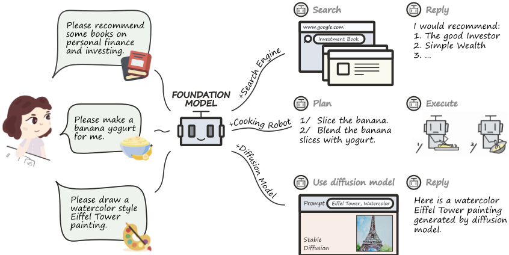
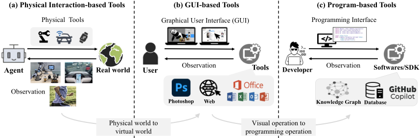
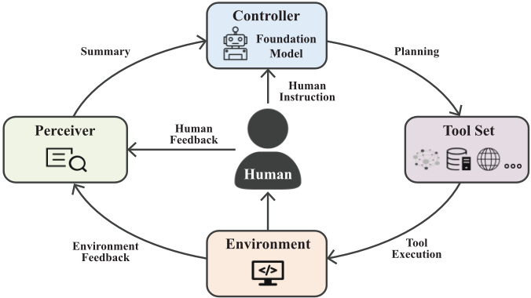
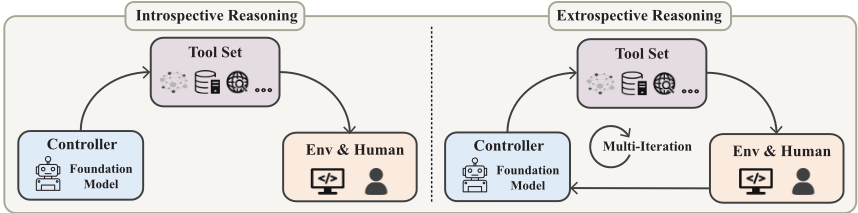
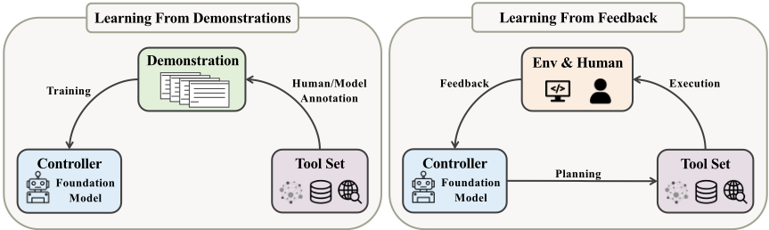
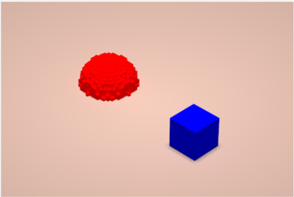
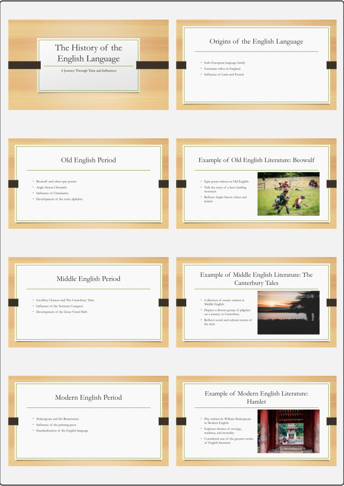

基于 Foundation Models 的工具学习（Tool Learning with Foundation Models）
该综述系统研究了 tool learning with foundation models 范式：让 LLM 作为 controller 理解用户意图与工具功能，通过推理把复杂任务分解为子任务、动态调整计划并选择合适工具逐步执行。论文提出由 controller、tool set、environment、perceiver 组成的通用框架，将规划分为不依赖环境反馈的 introspective reasoning 与基于反馈迭代的 extrospective reasoning，并总结 learning from demonstrations 与 learning from feedback（含 RLHF）两类训练策略，以及通过 semantic/GUI/programming 接口统一实现可泛化工具学习。作者在 18 个代表性工具上以 zero-shot/few-shot 提示实测 ChatGPT 与 text-davinci-003，发现简单提示即可让模型有效使用工具，但在模型已有内部知识的任务上 zero-shot 用工具可能反而变差，且 ChatGPT 整体未胜过 text-davinci-003。论文还系统讨论了安全可信、大型复杂系统、工具创造、个性化、知识冲突等开放问题。对团队而言，这是 Agent 工具调用与 harness 设计的全景式奠基参考。
此前工具学习研究多聚焦于孤立的具体任务与精细算法设计，缺乏对该领域关键挑战、机会与未来方向的系统性理解；同时此前工作缺少系统性的工具学习评测。论文旨在为 tool learning with foundation models 建立统一框架与全景认识。
提出通用工具学习框架，包含 controller（通常由 foundation model 充当）、tool set、environment、perceiver 四个组件；将流程形式化为意图理解（intent understanding）→工具理解（tool understanding，zero-shot/few-shot prompting）→带推理的规划，规划分为 introspective reasoning（静态生成多步计划，如 PAL、SayCan）与 extrospective reasoning（基于环境反馈迭代规划，如 ReAct、Self-Ask、ToolFormer、Inner Monologue）；训练策略总结为 learning from demonstrations（supervised/semi-supervised/self-supervised，如 WebGPT、Toolformer）与 learning from feedback（环境反馈、人类反馈/RLHF）；提出通过 semantic、GUI、programming 三类接口统一实现可泛化工具学习；并实现开源工具库 BMTools，在 18 个代表性工具上以 zero-shot/few-shot 提示对 text-davinci-003 与 ChatGPT 开展实验。
在 18 个代表性工具上评测 text-davinci-003 与 ChatGPT（zero-shot/few-shot prompting）：大多数情况下模型可通过简单提示学会有效使用工具并提升任务表现
对模型可凭内部知识解决的任务（如 calculator、search engine），zero-shot 工具调用有时反而导致更差性能，即次优的工具使用会损害表现；但 few-shot 提示下引入工具始终优于不使用工具
ChatGPT（经 RLHF 微调）整体并未优于 text-davinci-003，作者归因于 alignment tax（RLHF 训练削弱任务技能与 in-context learning 能力）及 ChatGPT 可能更小的模型规模
few-shot 设置下，Map、Weather、Slides、Tables、Cooking Assistant、AI Painting 等工具的 API 调用完成率令人满意；而 KGs、Wikipedia、online shopping、3D model construction 等即使 few-shot 仍远不能令人满意，尤其是需要生成可执行代码作为 API 参数的工具
具体量化数值在论文 Table 1 中给出，但正文文本未列出具体数字（各工具测试集规模如：MLQA 200 实例、股票 1200 QA 对、表格 13 表 117 查询、HotpotQA 200 实例、数据库 50 条 TPC-H 查询等）
区别于此前聚焦单一任务或单一环节的工作，本文首次给出工具学习的统一框架与系统性综述，统一了意图理解、工具理解、规划推理（introspective/extrospective 两分法）、训练策略与泛化（接口统一）的分析视角；补充了此前缺失的系统性工具使用评测（18 个工具、No Tool/Zero-shot/Few-shot 多 setting 对比，以 API 调用轨迹正确性为指标）；并系统提出安全可信、大型复杂系统、工具创造（tool maker）、个性化、具身学习、知识冲突等开放问题。
相关度级别：high
命中能力域：3.3 Agent 架构与工具使用 | 3.2 提示工程 | 3.5 评测与可靠使用 | 3.1 上下文工程与记忆
理由：论文核心正是团队 3.3 域的 Agent 工具调用与 harness 设计：controller 规划、工具选择、introspective/extrospective reasoning、接口统一与 BMTools 工具库，直接对应团队构建 Agent 自动化工具的架构词汇与设计检查清单；zero-shot/few-shot 工具提示与 CoT 推理直接命中 3.2 提示工程；18 工具的系统性评测方法（API 调用轨迹作为指标）与安全可信、知识冲突讨论命中 3.5；上下文长度限制下的工具检索中间层、RAG 知识冲突与向量库缓存命中 3.1。作为该领域的奠基性综述，虽不含可直接复用的 SOTA 方法，但为团队提供了完整的术语体系、设计空间与开放问题地图。
建议动作：深入精读并做内部分享
arXiv:2304.08354v3 [cs.CL] 6 Aug 2024
Yujia Qin 1, Shengding Hu 1, Yankai Lin 2∗, Weize Chen 1, Ning Ding 1, Ganqu Cui 1, Zheni Zeng 1, Xuanhe Zhou 1, Yufei Huang 1, Chaojun Xiao 1, Chi Han 3, Yi Ren Fung 3, Yusheng Su 1, Huadong Wang 1, Cheng Qian 1, Runchu Tian 1, Kunlun Zhu 8, Shihao Liang 8, Xingyu Shen 1, Bokai Xu 1, Zhen Zhang 1, Yining Ye 1, Bowen Li 1, Ziwei Tang 5, Jing Yi 1, Yuzhang Zhu 1, Zhenning Dai 1, Lan Yan 1, Xin Cong 1, Yaxi Lu 1, Weilin Zhao 1, Yuxiang Huang 1, Junxi Yan 1, Xu Han 1, Xian Sun 7, Dahai Li 7, Jason Phang 4, Cheng Yang 5, Tongshuang Wu 6, Heng Ji 3, Guoliang Li 1, Zhiyuan Liu 1∗, Maosong Sun 1∗
1 清华大学，2 中国人民大学，3 伊利诺伊大学厄巴纳-香槟分校（University of Illinois Urbana-Champaign），4 纽约大学（New York University），5 北京邮电大学，6 卡内基梅隆大学（Carnegie Mellon University），7 知乎（Zhihu Inc.），8 面壁智能（ModelBest Inc.）qyj20@mails.tsinghua.edu.cn
人类拥有创造和使用工具的非凡能力，这使他们得以突破自身的物理局限，探索新的疆域。随着近年来强大基础模型（foundation models）的出现，人工智能系统有潜力在工具使用方面达到与人类同样娴熟的水平。这一范式被称为基于基础模型的工具学习（tool learning with foundation models），它将专用工具与基础模型的优势相结合，以在问题求解中实现更高的准确性、效率和自动化水平。尽管潜力巨大，但该领域的关键挑战、机遇与未来努力方向仍缺乏全面的认识。为此，本文对工具学习进行了系统性研究与全面综述。我们首先介绍工具学习的背景，包括其认知起源、基础模型的范式转变，以及工具与模型的互补作用。我们回顾了现有的工具学习研究，并构建了一个通用的工具学习框架：从理解用户指令开始，模型应当学会将复杂任务分解为若干子任务，通过推理动态调整其计划，并通过选择合适的工具有效地完成每个子任务。我们还讨论了如何训练模型以提升其工具使用能力，并促进工具学习中的泛化。鉴于以往工作缺乏系统性的工具学习评估，我们对 18 个代表性工具进行了实验，展示了当前基础模型在熟练使用工具方面的潜力。最后，我们讨论了工具学习领域若干有待进一步研究的开放问题，例如确保安全可信的工具使用、利用基础模型实现工具创造，以及应对个性化挑战。总而言之，我们希望本文能够启发未来将工具与基础模型相融合的研究。相关代码和数据集已公开，可供进一步研究探索 1。
“塑造小提琴家的不仅仅是小提琴，我们所有人都被自己训练自己去使用的工具所塑造。”
1 https://github.com/OpenBMB/BMTools
∗ 通讯作者。
作者贡献见 § 6。
-Edsger W. Dijkstra
| 1 Introduction | 1 Introduction | 1 Introduction | 4 |
|---|---|---|---|
| 2 | Background | Background | 6 |
| 2.1 | Cognitive Origins of Tool Use . . . . . . . . . . . . . . . . . | . . . . . . . . . . . . . . . . 6 | |
| 2.2 | Tool Categorization: A User-Interface Perspective . . . . . . . | . . . . . . . . . . . . . . . . 7 | |
| 2.3 | Paradigm Shift of Foundation Models . . . . . . . . . . . . . | . . . . . . . . . . . . . . . . 8 | |
| 2.4 | Complementary Roles of Tools and Foundation Models . . . . | . . . . . . . . . . . . . . . . 9 | |
| 3 | Tool Learning | Tool Learning | 10 |
| 3.1 | Components | of Tool Learning . . . . . . . . . . . . . . . . . | . . . . . . . . . . . . . . . . 10 |
| 3.1.1 | Understanding the Components . . . . . . . . . . . . | . . . . . . . . . . . . . . . . 10 | |
| 3.1.2 | Connecting the Components . . . . . . . . . . . . . . | . . . . . . . . . . . . . . . . 11 | |
| 3.2 The General Procedure: From Intent to Plan . | . . . . . . . . . | . . . . . . . . . . . . . . . . 12 | |
| 3.2.1 | Understanding Intent and Tools . . . . . . . . . . . . | . . . . . . . . . . . . . . . . 12 | |
| 3.2.2 | Planning with Reasoning . . . . . . . . . . . . . . . . | . . . . . . . . . . . . . . . . 14 | |
| 3.3 Training | Models for Improved Tool Learning . . . . . . . . . | . . . . . . . . . . . . . . . . 16 | |
| 3.3.1 | Learning from Demonstrations . . . . . . . . . . . . . | . . . . . . . . . . . . . . . . 17 | |
| 3.3.2 | Learning from Feedback . . . . . . . . . . . . . . . . | . . . . . . . . . . . . . . . . 18 | |
| 3.3.3 | Generalizable Tool Learning . . . . . . . . . . . . . . | . . . . . . . . . . . . . . . . 19 | |
| 4 | Application and Experiment | Application and Experiment | 21 |
| 4.1 | Evaluated Tools . . . . . . . . . . . . . . . . . . . . . . . . . | . . . . . . . . . . . . . . . . 21 | |
| 4.2 | Experiments . . . . . . . . . . . . . . . . . . . . . . . . . . . | . . . . . . . . . . . . . . . . 24 | |
| 5 | Discussion | Discussion | 25 |
| 5.1 | Safe and Trustworthy Tool Learning . . . . . . . . . . . . . . | . . . . . . . . . . . . . . . . 25 | |
| 5.2 | Tool Learning for Large Complex Systems . . . . . . . . . . . | . . . . . . . . . . . . . . . . 27 | |
| 5.3 | From Tool User to Tool Maker: AI's Evolutionary Role . . . . | . . . . . . . . . . . . . . . . 27 | |
| 5.4 | From General Intelligence to Personalized Intelligence . . . . | . . . . . . . . . . . . . . . . 29 | |
| 5.5 | Tool Learning and Embodied Learning . . . . . . . . . . . . . | . . . . . . . . . . . . . . . . 30 | |
| 5.6 | Knowledge Conflicts in Tool Augmentation . . . . . . . . . . | . . . . . . . . . . . . . . . . 31 | |
| 5.7 | Open Problems . . . . . . . . . . . . . . . . . . . . . . . . . | . . . . . . . . . . . . . . . . 33 | |
| 34 | |||
| 6 Conclusion | 6 Conclusion | 6 Conclusion | |
| Contributions | Contributions | Contributions | 34 |
| A Case Study | A Case Study | A Case Study | 50 |
| A.1 | . . | 3D Models . . . . . . . . . . . . . . . . . . . . . . . . . | . . . . . . . . . . . . . . . . 50 |
| A.3 | A.2 . . . . . Making Slides . | Stock . . . . . . . . . . . . . . . . . . . . . . . . . . . . . . . . . . . . . . . . . . . . . . | . . . . . . . . . . . . . . . . 52 53 |
| 1 Introduction | 1 Introduction | 1 Introduction | 4 |
2
| 0 | 1 | 2 |
|---|---|---|
| A.4 | Movie Hunter . . . . . . . . . . . . . . . . . . . . . . | . . . . . . . . . . . . . . . . . . . . 58 |
| A.5 | Search Engine . . . . . . . . . . . . . . . . . . . . . . | . . . . . . . . . . . . . . . . . . . . 59 |
| A.6 | Chemicals Mining . . . . . . . . . . . . . . . . . . . . | . . . . . . . . . . . . . . . . . . . . 60 |
| A.7 | Cooking Assistant . . . . . . . . . . . . . . . . . . . . | . . . . . . . . . . . . . . . . . . . . 61 |
| A.8 | AI Painting . . . . . . . . . . . . . . . . . . . . . . . | . . . . . . . . . . . . . . . . . . . . 62 |
| A.9 | Navigating Knowledge Graphs . . . . . . . . . . . . . | . . . . . . . . . . . . . . . . . . . . 63 |
| A.10 ALFWorld | . . . . . . . . . . . . . . . . . . . . . . . . | . . . . . . . . . . . . . . . . . . . . 64 |
| A.11 Calculator | . . . . . . . . . . . . . . . . . . . . . . . . | . . . . . . . . . . . . . . . . . . . . 66 |
| A.12 Weather | . . . . . . . . . . . . . . . . . . . . . . . . . | . . . . . . . . . . . . . . . . . . . . 66 |
| A.13 Online Shopping | . . . . . . . . . . . . . . . . . . . . | . . . . . . . . . . . . . . . . . . . . 67 |
| A.14 Map | . . . . . . . . . . . . . . . . . . . . . . . . . . . | . . . . . . . . . . . . . . . . . . . . 68 |
| A.15 Processing Tables | . . . . . . . . . . . . . . . . . . . . | . . . . . . . . . . . . . . . . . . . . 69 |
| A.16 Translation | . . . . . . . . . . . . . . . . . . . . . . . | . . . . . . . . . . . . . . . . . . . . 71 |
| A.17 Wikipedia | . . . . . . . . . . . . . . . . . . . . . . . . | . . . . . . . . . . . . . . . . . . . . 72 |
| A.18 Database | . . . . . . . . . . . . . . . . . . . . . . . . . | . . . . . . . . . . . . . . . . . . . . 73 |
| 0 | 1 | 2 |
3
Therefore, foundation models enable AI to harness tools, which can lead to more potent and streamlined solutions for real-world tasks. Foundation models are able to decipher complex data, simulate human-like planning capabilities, and generate a broad spectrum of outputs. Concurrently, specialized tools can be employed to refine and target specific goals. The amalgamation of tools and models unveils vast potential where sophisticated procedures can be automated with limited human involvement. This paradigm, dubbed as tool learning with foundation models in this paper (Figure 1), aims to combine the strengths of specialized tools and foundation models, thereby culminating in greater accuracy, efficiency, and autonomy in problemsolving. Recent research has shed light on foundation models' potential to exhibit a level of dexterity and finesse in tool use (Lazaridou et al., 2022; Nakano et al., 2021; Cobbe et al., 2021; Thoppilan et al., 2022; Huang et al., 2022b; Ahn et al., 2022; Yao et al., 2022a,b; Schick et al., 2023; Wu et al., 2023; Bubeck et al., 2023). Despite these breakthroughs, the efforts mainly focus on applying foundation models to specific tasks and domains with delicate algorithm designs. The current understanding of tool learning is still not comprehensive enough to estimate its characteristics and future developments. We believe that it is crucial to examine and summarize the current progress of tool learning with foundation models to explore their potential and challenges and to better pave the way for future technological advancements.

4
In this paper, we conduct a systematic investigation and comprehensive review of tool learning, attempting to build a full grasp of the key challenges, opportunities, and directions in this field. Before delving into the tool learning framework, we introduce essential backgrounds (§ 2), covering both tools and foundation models and their interaction. Specifically, we first recapitulate the cognitive origins of tool use in human history and its potential implications for tool use in AI systems (§ 2.1), followed by a categorization of tools from the perspective of the user interface (§ 2.2). Then we review the AI paradigm shift brought by foundation models and highlight the emergence and significance of tool learning (§ 2.3). After that, we discuss the complementary roles of tools and foundation models, and argue that integrating both can bring various advantages, such as improving interpretability, enhancing robustness, and delivering better user experiences (§ 2.4).
在本节中，我们首先讨论人类工具使用的认知起源（§ 2.1），随后从用户界面的视角对工具进行分类（§ 2.2）。接着，我们回顾由基础模型（foundation models）带来的近期人工智能（AI）范式转变（§ 2.3）及其在工具学习中的意义。在此之后，我们考察专用工具与基础模型在解决问题过程中各自扮演的角色，并讨论将二者集成所带来的收益与挑战（§ 2.4）。
工具在人类数千年演化的漫长历史中发挥了至关重要的作用。工具通常被视为人类的延伸，正如古代的作战器械和农业机械一样。工具使用被定义为人类区别于其他物种的一种独特特征（Von Eckardt, 1995）。纵观演化历程，使用工具的能力对动物而言一直不可或缺，对那些智力高度发达的动物尤其如此（Shumaker et al., 2011）。例如，有观察发现黑猩猩会使用石头或其他材料砸开坚果（Boesch et al., 2019），而新喀里多尼亚乌鸦则能够制作并使用两种不同类型的钩状工具来协助捕捉猎物（Hunt, 1996）。然而，人类的工具行为在若干方面与这些观察存在差异。人类能够制造出比其他动物复杂得多的工具，例如将我们自身的动作转化为锤子和铅笔等工具中根本不同的机械动作（Frey, 2007）。此外，我们还能驾驭风力涡轮机等自然力来制造工具（Shumaker et al., 2011）。这种能力可能归因于我们对因果关系的深刻理解，正是这种理解使我们能够进行技术推理（Osiurak & Reynaud, 2020）。
工具使用的神经基础。为了更好地理解人类的工具使用行为，研究人员对工具观察与工具执行的神经基础进行了分析。研究证实，人类拥有参与抓取物体和使用工具的顶叶系统，而且观察工具使用时前缘上回（anterior supramarginal gyrus）的激活是人类被试的典型表现，猕猴则不具备这一现象（Orban & Caruana, 2014）。工具观察的这种神经认知基础可能与累积性技术演化的起源有关（例如，人类工具与技术历经世代在效率与复杂性上的不断提升（Osiurak & Reynaud, 2020）），也可能与其他一些人类现象有关（Reynaud et al., 2019）。而在工具执行方面，研究人员对基于操作的方法与基于推理的方法持有不同观点（Osiurak & Badets, 2016）。前者主张工具使用必须由感觉运动经验的模拟来支撑，后者则论证了基于机械知识的推理在工具使用中的重要性。尽管如此，认知科学的总体趋势是将认知理解为一种强调与外部世界交互的生成过程（enactive process）（Engel et al., 2013），并且来自观察、交流与动手实践的反馈对于掌握工具使用十分重要。
工具使用的三个智能层级。此外，还有一些专门设计的框架用于探讨人类工具使用所体现的智能水平。例如，"intoolligence"（Osiurak & Heinke, 2018）将工具使用行为划分为三种模式：辅助性工具使用（assistive tool use）通常是被动的、无意识的（例如，在避雨走廊中行走）；任意性工具使用（arbitrary tool use）需要主动交互（例如，驾驶、使用智能手机）；自由工具使用（free tool use）则进一步需要理解具体场景并为其选择合适的工具（例如，烹饪新菜肴）。在这一框架中，三种工具使用模式呈现出递进关系，作者假设实现自由工具使用的关键认知过程是技术推理（technical reasoning），它使人们能够通过观察他人使用、选择或制作工具来学习新动作，而无需进行大量的练习。
从物理工具到概念工具的转变。除了物理世界中的工具，我们还可以借助更为抽象的工具。以认知工具（cognitive tools，Heyes, 2018）为例：它指的是一种能够促进高阶思维（例如，多步骤的批判性分析、创造性问题解决方案的生成）的辅助手段。认知工具可以根据其所提供的功能进行分类（Lajoie & Derry, 2013），这些功能包括：（1）支持认知过程（例如，记录中间推理结果）；（2）减轻低层次的认知负荷，从而为高层次思考释放资源；（3）使学习者能够参与超出其能力范围的活动；（4）允许学习者生成并检验假设（例如，为医学生提供模拟诊断）。
6
弥合人类与机器工具使用之间的差距。首先，操作工具的能力深深植根于我们的认知与感知系统之中，并历经数百万年的演化。相比之下，基础模型主要依赖预训练数据中的统计模式，其工具使用能力与人类相比仍存在显著差距。人类能够感知工具的属性、理解工具的功能，并为每项任务识别出合适的工具。受此启发，我们在 § 3.2.1 中研究并讨论基础模型如何学习这一过程。其次，人类擅长将复杂任务分解为更小、更易于管理的子任务，并熟练地操作工具以完成每个子任务。然而，基础模型缺乏充分理解和利用工具所必需的物理具身与感官体验。因此，这些模型在需要高阶推理与适应性的任务上往往难以胜任，也无法以可信的方式有效整合来自多种来源的知识与工具。我们将在 § 3.2.2 中讨论如何借助模型的推理能力更好地制定可执行的计划。此外，当前用于使基础模型适配以学习特定工具的算法通常需要海量的监督数据（Nakano et al., 2021; Reed et al., 2022），这阻碍了其向更广泛类型的工具或新颖情境的泛化与迁移。因此，我们首先总结工具学习的训练策略（§ 3.3.1 和 § 3.3.2），并讨论如何促进工具学习的泛化与可迁移性（§ 3.3.3）。
当今世界中工具的数量与复杂性与日俱增，这使得以有意义的方式理解和归类它们变得愈发重要。一套对这些工具进行分类的体系有助于我们更好地把握它们的用途、优势以及发展潜力。在本文中，我们特别关注那些可以借助指令并结合基础模型来操作的工具。我们提出了一种分类法，依据这些工具的表现形式与交互方式对其进行分类。如图 2 所示，该分类法包含三个交互层级，按照从最有形到最无形的顺序排列。物理层级涉及与工具的直接物理交互。图形用户界面（GUI）层级支持用户与工具的可视化表示进行交互。程序层级则让用户直接与工具的底层源代码进行交互。
基于物理交互的工具。我们从最有形的一类工具开始，即基于物理交互的工具。顾名思义，这类工具涉及与物理世界的直接交互，包括机器人、传感器和可穿戴设备等可能对环境产生物理影响的设备。物理交互工具能够感知并响应用户所处的物理环境，这使它们在从制造业到医疗保健和教育等广泛的应用领域中发挥作用。物理交互工具贴近真实世界，具有大幅提升效率和生产力的潜力。例如，机器人可以执行从简单到复杂、甚至具有冒险性的任务，以减少人为失误和劳动力成本。传感器可以收集温度和压力等有价值的数据，从而实现对工业过程的实时监控与优化。而可穿戴设备则通过追踪生理或环境参数，为用户提供个性化体验，促进健康与安全。值得注意的是，尽管此类工具的输出是在物理层面与真实世界交互的，用户也可能在 GUI 或源代码层面创建工具的输入。
基于图形用户界面（GUI）的工具。有些工具允许用户通过交互式界面（即工具的可视化表示）并借助预定义的操作来对其进行操控。这类工具被定义为基于GUI的工具，它们不会对物理世界产生直接影响。GUI界面通常包括按钮、菜单、文本框以及其他图形元素，使用户能够与底层系统进行交互。这些工具被广泛应用于软件开发、数据分析和设计等各类行业和应用中。特别是，基于GUI的工具可以通过精简工作流程和自动化重复性任务来提高生产力。基于GUI的工具能够大幅简化复杂任务，并降低非技术用户的学习曲线。从这个角度来看，基于基础模型的工具学习与之有着相同的首要目标，即将繁复的任务简化为自然语言格式。代表性的基于GUI的工具通常是开发完善的软件，例如浏览器、Microsoft Office、Adobe PhotoShop等。这些应用展示了图形界面所能提供的多功能性，并使用户能够访问和操作软件中的复杂功能。另一方面，基于GUI的工具的主要局限在于，它们可能无法提供命令行界面或应用程序编程接口（API）所具备的灵活性和可定制性。在需要快速且大规模的响应、以及更强且灵活的控制的特定场景中，可视化界面可能并不总是与系统进行交互的最有效方式。
基于程序的工具。用户所能访问的工具的最内层是源代码，它为这些基于程序的工具的输入和输出提供了高度的灵活性。基于程序的工具是主要设计用于通过编程接口而非可视化界面来使用的软件工具。它们可以采取多种形式，包括声明式语言、程序库、软件开发工具包（SDK），甚至基于神经网络的工具。这些工具通常由对底层数据、系统或技术具有更深入理解的开发者或技术用户使用，借助这些工具，用户能够完成复杂的软件应用。基于程序的工具的主要优势在于，与基于GUI的工具相比，它们提供了更大的灵活性和可定制性，用户可以针对当前问题构建更为复杂精密的解决方案。因此，这类工具也比基于GUI的工具具有更陡峭的学习曲线，它们需要更高程度的技术专业知识和编程知识，而这可能是非技术用户所难以掌握的。例如，基于程序的工具在设置和配置方面可能更加耗时，并且在（使用）学习过程中可能需要更多的维护和支持。值得注意的是，尽管这些工具在学习曲线方面给人类带来了困难，但对于基础模型而言，它们可能并不构成同等程度的挑战。
7
2.3
基础模型的范式转变

可以看出，上述三种交互模式与工具内核的连接程度各不相同。它们并非严格互斥，而是呈现出相互交融的趋势。人类具备通过灵活地执行不同类型的工具来处理复杂任务的能力。在本文中，我们认为无论工具属于何种类型，从根本上有可能通过建立中介接口来利用基础模型执行这些工具。我们将在 § 3.3.3 中介绍为基础模型统一不同工具接口的方法。
近年来，自然语言处理（NLP）领域经历了一场范式转变，其标志是预训练语言模型（PLM）的出现（Devlin et al., 2019; Bommasani et al., 2021; Han et al., 2021）。在这一突破出现之前，NLP 是一个颇具挑战性的领域，需要为不同的研究方向分别设计学习目标，例如依存句法分析（Kübler et al., 2009）、命名实体识别（Nadeau & Sekine, 2007）以及文本摘要（Nenkova & McKeown, 2012）。尽管针对这些特定任务成功设计出了有效的模型与方法，但这种范式彼此分离的特性阻碍了向全面理解语言迈进的进程，从而限制了其潜力。
PLM 的发明改变了这一范式。PLM 以 Transformer（Vaswani et al., 2017）为基础构建，在海量语料库上进行训练，从中学习到通用的语言能力与世界知识。这一技术加速了 NLP 任务的统一，催生了“先预训练后微调”（pre-train-then-fine-tune）范式，该范式在 GLUE（Wang et al., 2019b）和 SuperGLUE（Wang et al., 2019a）等多个 NLP 基准测试（benchmark）上取得了新的最先进（state-of-the-art）性能。在这一阶段，各个任务共享相同的起点，只有随着任务特定适配的推进才逐渐分化。任务范式的融合仍在持续进行。T5（Raffel et al., 2020）借助文本描述将所有 NLP 任务转化为文本到文本（text-to-text）的格式，而 GPT-3（Brown et al., 2020）则发现，引入恰当的文本提示（prompt）能够为特定任务产生期望的输出。提示本质上充当着一种自然语言接口，人们普遍认为它能够激发 PLM 在预训练期间学到的知识。对于 GPT-3 这类大模型，提示能够在不更新模型参数的情况下执行下游任务。研究甚至表明，在恰当的提示引导下，模型能够完成复杂的推理任务（Wei et al., 2022c; Wang et al., 2022a）。此外，以自然语言格式表述的提示具备出色的泛化能力。具体而言，经过多样化指令微调的模型能够有效地泛化到新的、未见过的数据上（Wei et al., 2022a; Sanh et al., 2022）。总体而言，提示展示了一种概念验证，即以 PLM 作为底层基础设施、以自然语言作为媒介来统一执行各种任务。一个极为成功的例子是 ChatGPT，其中所有的自然语言理解与生成过程都通过对话式交互来完成。
8
然而，仍存在大量超越纯自然语言范畴的任务。例如，生成演示幻灯片 2、通过 CAD 应用程序构建 3D 模型，以及通过分析团队成员日历来安排会议，这些都是传统人工智能中未曾定义的复杂任务的例子。幸运的是，预训练语言模型（PLM）强大的泛化能力使我们能够以自然语言为媒介，通过操作工具来完成这些任务（Zeng et al., 2022）。从本质上讲，工具学习的关键在于将复杂任务分解为子动作，以自然语言的形式对动作进行标记化（tokenize），并将其转换为特定工具能够理解的可执行指令。语言模型充当“翻译者”的角色，使不具备专业技术知识的个人也能更轻松地完成复杂任务。工具学习的潜在应用广泛而令人振奋，涵盖从自动化客户服务、个人助理，到自动驾驶汽车，乃至太空探索等诸多领域。通过使机器能够以更自然、更细腻的方式理解人类语言并与之交互，我们可以开启此前无法实现的协作与问题求解的新可能。我们预期，工具学习将有助于通过共享工具促进多样化任务的整合。因此，尽管自然语言接口已经实现了语言领域内部的统一（Hao et al., 2022），但非语言任务所带来的挑战要求我们采用更先进的方法来同时利用自然语言与工具学习。借助自然语言的力量，我们能够构建出可以理解并适应周围复杂而动态世界的系统，为创新与发现开辟新的途径。
专用工具与基础模型的融合为发挥二者各自独特优势提供了一种富有前景的途径。通过将基础模型的理解与推理能力融入专用工具，我们能够创建出智能工具，使其可以完成比单独使用专用工具或基础模型都更为复杂的任务。具体而言，二者的结合可带来诸多益处，如下所述。
工具的益处。旨在精简高效地实现具体明确目标的工具为工具学习带来以下几方面的益处：(1) 缓解记忆局限。尽管基础模型已展现出卓越的记忆能力（Carlini et al., 2021, 2022, 2023），但它们无法记住每一条训练数据。此外，基础模型在生成过程中通常仅以相对较短的上下文作为提示，因此并非所有已记忆的知识都能得到恰当的引导（Mialon et al., 2023）。另外，仅靠记忆无法实现对最新知识的实时覆盖，尤其是考虑到用户可能提出的新请求具有潜在的无限多样性。除此之外，基础模型还因产生知识幻觉而受到批评（Roller et al., 2021; Shuster et al., 2021），即生成看似合理但与事实不符的内容。这在金融交易等要求结果100%正确的应用中是不可接受的。鉴于上述因素，有必要通过实时工具执行来增强基础模型，以缓解其在记忆方面的局限。例如，如果基础模型能够学会如何利用搜索引擎和（不同模式的）数据库系统，那么相当大一部分记忆负担便可以卸载给它们。(2) 增强专业性。专用工具旨在服务于特定领域，提供基础模型所不具备的功能。因此，借助量身定制的算法，它们更适合满足领域特定任务的需求，例如用于科学计算的 Wolfram 3。模型无需仅依靠基础模型自身来完成任务，而是可以调用适当的工具，从而泛化到超出其自身能力的更广泛任务。(3) 更好的可解释性。基础模型因决策过程缺乏透明度而受到批评（Linardatos et al., 2020），这在医疗或金融等应用中可能是一个重大隐忧，因为在这类应用中，可解释性对于做出明智决策至关重要。相比之下，工具执行的过程反映了模型解决复杂请求的完整过程，从而带来更好的可解释性和透明度。用户可以轻松理解为何调用某些工具以及它们如何为最终输出做出贡献，这有助于增进信任并促进人机协作。(4) 提升鲁棒性。基础模型容易受到对抗攻击（Wallace et al., 2019; Jin et al., 2020），对输入的轻微改动就可能使模型预测发生翻转。这是因为这些模型高度依赖训练数据中的统计模式。相反，工具是针对其预期用例专门设计的，可能不受输入扰动的影响。这使得工具对对抗攻击具有更强的抵抗力。总体而言，将工具纳入基础模型的工作流程可以提升系统的鲁棒性，降低恶意攻击的风险。工具与模型之间这种和谐的相互作用能够增强系统应对不可预测的现实世界环境的可靠性。在第 4 节和附录 A 中，我们通过具体示例展示工具如何增强模型在各种任务中的能力。
2 https://www.microsoft.com/en-us/microsoft-365
3 https://www.wolframalpha.com/
9
基础模型的优势。基础模型能够为理解、规划、推理和生成提供坚实的基础，从而为工具学习带来如下几方面的益处：（1）更优的决策与推理能力。基础模型在海量数据上进行训练，使其能够获取覆盖广泛领域的世界知识。若得到恰当的引导，这些知识便可被用于在较长的时间跨度上进行决策与规划（Huang et al., 2022a）。此外，基础模型已展现出卓越的推理能力（Wei et al., 2022c; Wang et al., 2022a），从而使其能够推断行动的后果并做出明智的决策。这些推理能力对于需要深入理解因果关系的任务尤为有用（§ 3.2.2）。（2）更好的用户体验。得益于基础模型强大的意图理解能力，工具学习有望彻底改变我们与机器交互的方式，将用户从认知负荷中解放出来，使其能够投入高阶思维与决策过程。这进而促成了一种无缝且更自然的基于语言的交互范式，革新了传统的图形用户界面（GUI）。用户只需提供高层次的指引和方向，模型便能无缝地理解用户意图，从而提供更加个性化且精准的响应。此外，工具学习有潜力使复杂工具的使用大众化。借助基础模型，即使是新手用户，无论其先前经验或技术专长如何，都能轻松快速地上手新工具。这不仅降低了新用户的入门门槛，也为创新与创造解锁了丰富的可能性。然而，需要注意的是，工具使用中人与模型的协作也引发了伦理方面的担忧，我们将在 § 5.7 中对此进行讨论。
在本节中，为了统一现有工作并促进对工具学习的全面理解，我们首先提出一个通用框架，该框架涵盖四个基本组件，即工具集（tool set）、环境（environment）、控制器（controller）和感知器（perceiver），详见 § 3.1。随后，我们在 § 3.2 中对工具学习的一般流程进行详细讨论。最后，我们在 § 3.3 中深入探讨工具学习的训练方法，并讨论如何实现可泛化的工具学习。
我们如何使基础模型（foundation models）能够利用专用工具的优势来完成复杂任务？为了更好地回答这个问题，我们用四个组件来构建工具学习的框架，如图 3 所示。每个组件都有其自身的特点和功能（§ 3.1.1），但它们彼此之间也密切交互（§ 3.1.2）。
我们首先介绍每个组件，并解释它们如何为工具学习过程做出贡献。
工具集（Tool Set）。作为工具学习的基本要素，工具集 T = {T 1 , T 2 , · · · } 包含一系列具有不同功能的不同工具。正如我们在 § 2.2 中详细阐述的，T 中的工具可以具有不同的接口。在接下来的章节中，我们主要以应用程序编程接口（Application Programming Interface, API）为例来说明如何与工具交互。这里我们将 API 定义为任何能够以基础模型的输出作为其输入的函数。例如，对于一个天气 API，其输入可能是位置和时间，而输出可能包含温度或风速。
环境（Environment）。环境 E 是工具运行的世界，它向感知器提供工具的执行结果。它为工具执行提供必要的基础设施，可以是虚拟的，也可以是真实的。前者指的是一种模拟环境，允许模型与工具的数字表示进行交互；而真实环境则涉及与物理工具的实际交互。虚拟环境具有易于访问和易于复制的优势，使模型的训练更具成本效益。然而，虚拟环境可能无法完全复现真实环境的复杂性，从而导致过拟合和泛化能力差（Hansen et al., 2021）。另一方面，真实环境提供了更贴近现实的情境，但可能更难访问，且涉及更高的成本。
10

控制器（Controller）。控制器 C 充当工具学习框架的“大脑”，通常使用基础模型来实现。控制器 C 的目的是提供一个可行且精确的计划，以便使用工具来满足用户的请求。为此，C 应当理解用户意图以及意图与可用工具之间的关系，然后制定计划来选择合适的工具以处理任务，这将在 § 3.2.1 中讨论。当查询复杂且针对高层任务时，C 可能需要将任务分解为多个子任务，这要求基础模型具备强大的规划和推理能力（§ 3.2.2）。
感知器（Perceiver）。感知器 P 负责处理用户和环境的反馈，并为控制器生成摘要。简单的反馈处理形式包括将用户反馈和环境反馈拼接在一起，或使用预定义的模板对反馈进行格式化。随后，摘要化的反馈被传递给控制器，以辅助其决策。通过观察这些反馈，控制器可以判断所生成的计划是否有效，以及执行过程中是否存在需要处理的异常情况。在更复杂的场景下，感知器应能够支持多种模态，例如文本、视觉和音频，以捕捉来自用户和环境的反馈的多样性。
形式化地，假设我们拥有一个工具集 T，控制器可以利用它来完成某些任务。在时间步 t，环境 E 提供关于工具执行的反馈 e t。感知器 P 接收用户反馈 f t 和环境反馈 e t，并生成摘要化的反馈 x t。通常，感知器可以通过预定义的规则（例如，将 f t 和 e t 拼接）来构建 x t，也可以用复杂的神经模型进行建模。控制器 C 生成一个计划 a t，该计划从 T 中选择并执行合适的工具。这一过程可以形式化为如下概率分布：
其中 θ C 表示 C 的参数，q 表示用户查询或指令，H t = { ( x s , a s ) } t - 1 s =0 表示历史反馈与计划。在最简单的形式下，生成的计划 a t 可以只是用于工具执行的一个特定动作。C 也可以将其推理过程与动作预测相协同，此时 a t 还可以额外包含推理轨迹，用以解释接下来应当解决哪个子任务，以及为解决该子任务应选择哪个工具。值得注意的是，如果从公式 (1) 中去除对 x s 的依赖，所得到的概率分布便等价于自回归语言建模。从这个角度来看，控制器还额外地将基础模型接地（ground）到环境和工具集上。此外，我们可以将公式 (1) 因式分解如下：
11
这一分解表明，计划 a t 的构建涉及两个子任务：基于用户意图选择合适的工具，以及决定使用所选工具执行哪些动作。例如，给定诸如“我想预订下周飞往北京的航班”这样的指令，控制器 C 首先推断出用户的目标是预订航班，目的地是北京，出行时间是下周。随后，模型选择机票预订系统作为工具。最后，它将时间和目的地作为初步计划输入。在预订过程中，我们可能会遇到意外情况，例如下周飞往北京的航班不可用。为了应对这些异常情况，我们可以进一步赋予 C 对当前上下文进行推理并生成备选计划的能力，我们将在 § 3.2.2 中对此进行详细讨论。
在计划 a t 生成之后，它将在 E 中执行，由此产生的来自 E 的反馈 e t +1 将被传递给感知器。上述过程重复多轮，直至控制器完成任务。总体目标是找到一个动作序列 { a t }，使其最终完成用户指令 q 所指定的任务。需要注意的是，在工具执行之后，控制器还可以将执行结果整合为一个面向用户的合理响应（详见 § 5.6）。
如 § 3.1.2 中所述，工具学习的总体流程需要不同组件之间错综复杂的交互。在本节中，我们将进一步详细阐述该流程中涉及的关键问题。
为了准确完成用户查询 q 所指定的任务，控制器需要理解两个方面：（1）用户的潜在意图，这涉及将自然语言 q 识别并形式化为一个高层任务（即意图理解，intent understanding）；（2）工具集 T，这需要理解其中每个工具的功能与目标（即工具理解，tool understanding）。通过理解这两个方面，控制器能够弥合用户意图与工具集之间的鸿沟，这是图 3 中连接控制器 C、用户与工具集 T 的先决条件。
意图理解。理解用户意图是自然语言处理（NLP）领域一个长期存在的研究课题（Jansen et al., 2007; Sukthankar et al., 2014），其涉及理解用户查询背后的潜在目的。意图理解在需要人机交互的场景中至关重要，例如开发能够与用户进行复杂而细致对话的先进对话 Agent。它需要学习从指令空间到模型认知空间的映射。通过准确识别用户意图，控制器能够提供更加个性化的响应，从而带来更好的用户体验。
图 5：工具理解中零样本提示与少样本提示的示例。这些提示通过描述某个天气 API 的功能（零样本提示）或给出其使用示例（少样本提示）来构建。图 4：工具理解中零样本提示与少样本提示的示例。这些提示通过描述某个天气 API 的功能（零样本提示）或给出其使用示例（少样本提示）来构建。
以适应工具的变化。例如，当工具被修改或升级时，我们可以灵活地重写提示，以调整模型的行为。尽管具有这些优势，提示方法仍然面临若干挑战。首先，由于提示的有效性在很大程度上取决于模型本身，规模较小或能力较弱的模型无法很好地理解提示。其次，提示受输入上下文长度的限制。尽管已有研究表明基础模型能够通过提示学会使用简单工具，但实际情况可能更为复杂，这就要求模型适应不同个体意图表达的多样性。一种解决方案是引入更加多样化的训练数据，以覆盖广泛的现实场景，从而使模型能够学习不同指令的细微差异。另一种解决方案是利用用户反馈，主动使模型适应个体用户，即个性化工具学习（§ 5.4）。
17 13
一种潜在的解决方案是增加一个工具选择的中间阶段，该阶段首先检索出一小部分最适合当前任务的工具。另一种解决方案是微调（fine-tuning），即利用具体的工具调用示例对模型进行优化，使其能够理解工具。这一过程涉及利用从人类工具调用经验中获得的丰富知识。在实际部署时，经过微调的模型无需在输入中纳入工具定义，从而缩短了输入长度并加速了模型推理。然而，微调的一个主要局限在于它通常需要大量的人工标注或演示。此外，工具会频繁更新，微调后的模型需要使用更新后的示例进行重新训练，从而产生额外的成本。关于基于微调的解决方案的更多讨论见 § 3.3。
如 § 3.2.1 所述，对意图和工具的理解为规划奠定了坚实的基础。然而，这对于处理错综复杂的任务而言仍然不够。用户查询 q 往往隐含着一个复杂任务，该任务应被划分为多个子任务并按恰当的顺序执行，因而需要一个推理过程。
近期研究已经揭示，当基础模型被扩展到一定规模时，推理能力便会涌现（Wei et al., 2022b）。具体而言，拥有数百亿或数千亿参数的基础模型能够在复杂问题求解过程中生成中间推理轨迹，从而显著提升其零样本和少样本性能（Nakano et al., 2021; Nye et al., 2021; Wei et al., 2022b）。在基础模型中观察到的推理能力似乎促进了从系统 1 到系统 2（Kahneman, 2011）的转变，从而使其能够完成更为复杂的任务。
激发基础模型的推理。尽管心理学文献对推理这一概念进行了广泛研究（Wason, 1968; Kelley, 2013），但应用于基础模型的推理概念尚未得到清晰定义。不过，总体而言，基础模型文献中的推理能力可以被界定为将复杂问题分解为子问题并逐步求解这些子问题的能力（Wei et al., 2022c; Press et al., 2022; Khot et al., 2022）。在此我们与这些工作保持一致，在问题分解与子问题求解的意义上讨论推理。
原始的少样本提示学习（Brown et al., 2020）——即为模型提供由针对给定任务的若干示例构成的提示——已被证明在涉及需要复杂推理的问题时会失效（Creswell et al., 2022）。为解决这一问题，Wei et al. (2022c) 提出了思维链（Chain-of-Thought, CoT）提示。与原始的少样本提示学习不同，CoT 额外在提示中为每个示例插入推导出最终答案所需的推理轨迹。通过这种方式，CoT 促使模型在得出最终答案之前生成关于必要中间步骤的“思考”。CoT 已被证明能够在包括算术推理、常识推理和符号推理在内的广泛任务上显著提升性能（Wei et al., 2022c）。
鉴于基础模型卓越的推理能力，近期研究已成功尝试将其应用于工具学习中的控制器。已有研究表明，其推理能力使控制器能够有效地将复杂问题分解为若干子问题，并确定针对每个子问题应调用哪个工具。我们将相关研究分为两类：内省推理（introspective reasoning）与外省推理（extrospective reasoning）。前者在不与环境 E 交互的情况下生成静态的工具使用计划，而后者通过迭代地与 E 交互并利用先前执行所获得的反馈来增量式地生成计划。如图 5 所示，在内省推理中，环境 E 对控制器 C 不可见，而在外省推理中则可见，从而在四个组件之间形成闭环交互。
内省推理。这类推理在不知道中间执行结果的情况下，直接生成多步工具使用计划。例如，Huang et al. (2022a) 研究了基础模型的规划能力，并表明它们能够将高层任务分解为语义上合理的子计划。另一项代表性工作是程序辅助语言模型（Program-Aided Language Models, PAL）（Gao et al., 2022），它提示模型为中间推理步骤生成 Python 代码。PAL 使用 Python 程序解释器作为工具，使模型扮演编写详细注释的程序员角色，从而在算术、符号和算法推理方面取得了显著提升。值得注意的是，“模型即程序员”（model-as-programmer）的思想在具身智能体（embodied agents）中也被证明是成功的，例如 ProgPrompt（Singh et al., 2022）和 Code-as-Policies（Liang et al., 2022a），它们提示模型为具身智能体生成可执行程序。这些研究表明，尽管模型并未与环境直接交互，它们仍能够为智能体生成可执行程序，并预判计划执行中可能出现的异常。另一个例子是 Visual ChatGPT（Wu et al., 2023），它将各种视觉基础模型与 ChatGPT 交错结合，以实现图像的理解与生成。在该系统中，ChatGPT 充当核心控制器并进行顺序决策。在每一步，ChatGPT 可能调用某个视觉模型来修改现有图像，或以纯文本形式回应用户。
14

然而，由于这些模型并未与环境相接地（grounded），它们可能生成不切实际且毫无意义的计划。为此，SayCan (Ahn et al., 2022) 强调的是那些 Agent “被允许”执行的动作，而非其“愿意”执行的动作。在实践中，他们采用价值函数来估计每个动作被成功执行的概率。借助该函数，Agent 在物理层面上更好地与环境接地。总体而言，尽管缺乏环境反馈，基础模型在内省推理中仍展现出卓越的有效规划能力。它们能够预判计划执行过程中可能出现的异常，并相应地调整自身计划。这种能力不仅使控制器能够生成可执行的程序，还增强了其为广泛任务进行规划的能力。
外省推理。尽管内省推理十分简单，但它无法根据中间执行结果对计划进行调整。一种更为合理的规划方式是将环境 E 纳入考量，并以增量方式生成计划（例如每次一步），使后续计划依赖于先前的执行结果。这使得 § 3.1 中描述的四个组件能够良好集成并有效协作，从而完成复杂任务。我们将这种增量式推理策略称为外省推理。与内省推理相比，外省推理还额外考虑来自用户和环境的反馈（图 5），因此更适合复杂任务 (Madaan et al., 2023; Wang et al., 2023b)，例如多步问答（QA）和具身学习，其中每一步的决策都依赖于前序上下文。
诸如 Self-Ask (Press et al., 2022)、ReAct (Yao et al., 2022b) 和 ToolFormer (Schick et al., 2023) 等近期工作已经表明，通过提供搜索引擎 API 的访问能力，模型能够在多步 QA 上取得更高的准确率。通过思维链（CoT）提示（Self-Ask 和 ReAct）或微调（ToolFormer），模型可以学会分解复杂问题，并利用搜索 API 找到第一个子问题的答案。随后，模型可以基于返回的响应和问题，迭代地确定下一个要提出的问题，或给出最终答案。
对于具身学习（embodied learning）而言，尽管内省式推理（introspective reasoning）方法已经展现出生成可执行程序并处理潜在执行异常的能力，但与环境进行直接交互可以进一步增强模型的规划能力。例如，Inner Monologue（Huang et al., 2022b）利用来自环境的多种反馈来源，例如任务是否成功完成以及当前的场景信息。通过这种方式，模型能够生成更可行的计划，并提升其完成高层指令的能力。LLM-Planner（Song et al., 2022）显式地考虑了计划执行过程中可能出现的异常，并在执行失败时利用环境反馈重新生成计划，使模型能够恰当地处理异常情况。此外，ReAct（Yao et al., 2022b）赋予模型自主权，使其能够在规划过程中自行决定何时停止生成动作 token，从而对当前情况进行推理并制定更精细的后续计划。
15
总而言之，外省式推理（extrospective reasoning）需要控制器与环境之间进行交互，这是一种更为复杂的设定。然而，来自用户和环境的实时反馈使模型能够更全面地理解当前情况，从而有可能最终实现那些需要大量规划才能达成的长期目标。
多步多工具场景中的挑战。人类不会仅依赖单一工具来完成复杂任务。相反，我们会仔细地将任务分解为若干子任务，为每个子任务选择最合适的工具，并逐步完成它们。如上所述，当前研究在任务分解方面已展现出令人满意的性能。然而，在针对不同子任务使用不同工具方面仍缺乏探索。本节中提到的大多数研究仅限于多步单工具或单步多工具场景。不过，近期已涌现出一些针对多步多工具场景的研究。其中一个例子是 ReAct 模型（Yao et al., 2022b），它集成了 Wikipedia 的多个 API，并利用基础模型来决定何时使用哪个 API。随后，MM-ReAct（Yang et al., 2023）通过引入多个视觉专家，将 ReAct 推广到多模态领域。此外，一些近期项目（如 Auto-GPT 4）展示了 GPT-4 在操控多种工具和制定长期计划方面的巨大潜力，拓展了工具学习可能性的边界。给定一个用户查询，Auto-GPT 将采取逐步行动来自主完成目标。除了对当前状态进行推理之外，Auto-GPT 还能反思过去的行动以改进决策。尽管这些工作是在多步多工具场景中推进工具学习的重要一步，但仍有一些挑战和未来方向有待研究。
我们期待未来有更多工作迈向更实用的多步多工具场景，并努力应对这些挑战。作为一项先行探索，我们在 § 4 中评估了当解决任务需要多个工具（API）时基础模型的性能。
Guidance, either from humans or environments, plays a critical role in training foundation models to use tools. In contrast to the prompting-based methods mentioned in § 3.2.1 and § 3.2.2, which rely on the frozen foundation models' in-context learning abilities, the training-based method optimizes the model with supervision. As noted by Fagard et al. (2016), there are two primary ways for infants to learn a new tool, that is either from demonstration by an adult modeling the action or relying on their own exploration. Analogously, as shown in Figure 6, we categorize training strategies for tool learning into two streams: (1) learning from
4 https://github.com/Torantulino/Auto-GPT
16
3.3
Training Models for Improved Tool Learning

concrete tool-use demonstrations (Nakano et al., 2021; Sasaki & Yamashina, 2021), which often requires human annotation, and (2) learning from feedback, which typically involves reinforcement learning (Reddy et al., 2020; Baker et al., 2022). Finally, considering the existence of potentially massive tools, learning each of them one by one is infeasible in practice. Hence, we emphasize the importance of generalization in tool learning and discuss potential solutions (§ 3.3.3).
模型可以通过模仿学习（imitation learning）进行训练，以模拟人类专家的行为（Hussein et al., 2017; Liu et al., 2018b; Baker et al., 2022）。行为克隆（behavior cloning）（Bain & Sammut, 1995）可以被视为模仿学习的一种简化形式，其重点是以监督方式学习策略，并通常假设专家的行为是最优或接近最优的。行为克隆的目标是训练模型在给定特定输入或条件的情况下模仿人类专家的动作；当专家的动作能够被方便地记录并用于学习时，这种方法通常被采用（Torabi et al., 2018）。
形式化地，假设我们有一个大小为 N 的数据集 D，由用户查询 q 与人类示范标注 a ∗ 组成的数据对构成，即 D = { ( q i , a ∗ i ) } N - 1 i =0 。从人类示范中学习通过以下目标来优化控制器的参数 θ C：
其中，a ∗ i,t 是处理 q i 时第 t 次迭代的人类标注，T i 是 a i 的总迭代次数，其他变量遵循公式 (1) 中定义的符号表示。根据 a ∗ 的获取方式，从示范中学习可以分为三类流派，人类干预程度逐渐降低：
监督学习（Supervised Learning）。传统上，行为克隆（behavior cloning）已被广泛探索，用于为自动驾驶车辆和机器人应用学习端到端或模块化的感知器-控制器模型（Ly & Akhloufi, 2020; Codevilla et al., 2019）。近年来，以监督方式微调基础模型（foundation models）来执行面向工具的任务引起了人们的极大兴趣。例如，Li et al. (2022) 将基础模型用作策略网络，其输入为 token 化的环境观测、原始目标以及动作历史。得益于基础模型所带来的任务通用的归纳偏置，使用该策略网络进行行为克隆显著提升了域内性能和分布外泛化能力。另一个例子是 WebGPT (Nakano et al., 2021)，它通过迭代地改进其搜索查询并记录重要信息来与搜索引擎交互。为实现这一目标，作者首先构建了一个由 Bing 5 支持的搜索接口，然后微调 GPT-3 (Brown et al., 2020) 以克隆人类的网页搜索行为。作为在通用领域上预训练的语言模型，原始的 GPT-3 本身并不天然锚定于有效的浏览器命令。因此，关键在于首先收集人类与浏览器交互的示范，然后学习状态到动作的映射。微调之后，该模型在操纵搜索引擎进行信息检索方面展现出卓越的能力，甚至超越了人类专家。类似地，WebShop (Yao et al., 2022a) 提供了一个基于网页的交互式环境，Agent 可以在其中浏览和购买商品。通过行为克隆，训练得到的 Agent 在根据人类指令购买正确商品方面表现出不俗的性能。
5 https://www.microsoft.com/en-us/bing/apis/bing-web-search-api
17
半监督学习（Semi-supervised Learning）。通常情况下，出于时间和成本的考虑，人类行为难以被轻易记录下来。然而，大规模的无标注数据往往是可获得的，我们有可能从中构建弱的、含噪声的监督信号。值得注意的是，近期的工作表明，我们可以采用能力较弱的模型在无标注数据上标注伪标签（pseudo-labels），并将其转化为弱监督的工具调用示范。例如，Baker et al. (2022) 利用少量种子标注数据训练了一个模型，用于预测 Minecraft 视频游戏中每个时间步所采取动作的伪标签。通过从这些伪标签中学习，可以训练出更强大的模型，而无需在目标环境中对模型进行 rollout，也无需大规模的金标准人类行为标注。
自监督学习。尽管半监督学习降低了对人类行为标注的繁重需求，但仍需要一个种子标注数据集来获取伪标签。此外，种子数据集中的偏差也可能在训练过程中被放大，导致泛化性能不佳。为此，研究人员最近表明，仅需少量演示，基础模型便能以自监督的方式自学如何使用工具（Parisi et al., 2022; Schick et al., 2023）。例如，Toolformer（Schick et al., 2023）利用基础模型的上下文学习（in-context learning）能力，基于少量人工编写的示例迭代地自举工具调用示例。这些自动生成的示例还会经过进一步过滤以减少噪声。最终得到的工具调用数据集包含充足的监督信号，显著提升了 GPT-J（Wang & Komatsuzaki, 2021）的工具调用性能，凸显了自监督学习在增强工具调用能力方面的潜力。
收集人工标注的工具调用示例（其中可能包含完整的人类行为轨迹和最终答案）既耗时又费力。此外，由于学习到的模型遵循所记录的人类行为，它可能无法有效适应新环境。另外，显式地标注环境条件和 Agent 行为的所有可能场景也是不切实际的（Codevilla et al., 2019）。相比之下，人类通过试错来纠正和改进自身的工具调用行为（Allen et al., 2019）。类似地，来自环境和人类的反馈可以使模型理解其动作的后果，并相应地调整自身行为。来自反馈的监督还可以增强以监督方式训练的 Agent 的能力（Nakano et al., 2021; Baker et al., 2022）。形式化地，从反馈中学习可以描述为：基于查询集 Q = { q i } i 进行开放探索，并据此优化控制器参数 θ C：
其中 R 是根据反馈序列估计得到的奖励，T i 表示处理 q i 所需的迭代次数。
面向工具学习的强化学习（Reinforcement Learning, RL）。RL 是使人工 Agent 在复杂决策过程中从其环境中进行学习的常见解决方案（Silver et al., 2018; Berner et al., 2019; Schrittwieser et al., 2020）。工具学习可以被视为一种 RL 场景，其中动作空间由工具定义，Agent 学习选择合适的工具并执行能最大化奖励信号的正确动作。策略模型可以由基础模型进行初始化（Schulman et al., 2017）。这种初始化为策略模型带来了丰富的先验知识，从而减轻了 RL Agent 学习基本技能的需求。借助量化 Agent 在实现任务目标方面表现的奖励函数，RL 已成功应用于各种工具学习场景，例如机器人抓取（Levine et al., 2018）和多智能体自动课程（Baker et al., 2020）。通过优化损失函数，Agent 学会反思环境的当前状态，选择合适的工具，并执行能带来最高期望奖励的正确动作。接下来，我们介绍两种反馈来源：环境反馈和人类反馈，在工具学习的背景下，它们可以被视为奖励信号的来源。这两种反馈是互补的，并且可以相互结合。
环境反馈（Environment Feedback）。控制器与环境进行交互，并接收关于其动作后果的反馈。随后，模型基于该反馈更新其策略，以改进其工具调用行为。环境反馈可分为两种形式：（1）结果反馈（result feedback），即从环境返回的最终反馈，用于表明模型的动作是否成功完成了任务。这类反馈对模型生成的规划进行整体评估。例如，WebShop（Yao et al., 2022a）使用人工编写的奖励来评估人类购买的商品与模型购买的商品之间的相似度，以此表明控制器执行的动作是否导向了正确的最终商品。通过接收关于其动作成功或失败的反馈，模型可以迭代地更新其规划策略，并调整其决策过程；（2）中间反馈（intermediate feedback），指由某个动作触发的环境状态变化。通过观察状态变化，基础模型可以了解每个动作是否有效且恰当，从而使模型能够相应地更好地调整其行为。这类反馈提供了关于每次工具执行有效性的更详细、更及时的信息。以与搜索引擎交互以收集问答所需信息为例，模型可以通过观察搜索查询所呈现的信息来更新其策略，从而实现更高效的信息检索。
18
人类反馈（Human Feedback）。人类可以基于模型生成的规划给予模型奖励和惩罚，以规范其行为。人类反馈可以是显式的（explicit），即对模型表现提供清晰而直接的洞察，体现人类的偏好，例如，以 1 到 5 的量表对模型生成的动作的质量进行评分；人类反馈也可以是隐式的（implicit），即并非由用户直接指定，而是可以从用户行为及其与模型的交互中推导得出。例子包括用户的比较（Ouyang et al., 2022）、响应时间，以及用户在收到模型输出后采取的动作（例如，点击推荐的链接）。
尽管人类反馈准确且稳定，但其需要大量标注且延迟较高。为解决这一问题，研究者提出了基于人类反馈的强化学习（reinforcement learning from human feedback, RLHF）（Christiano et al., 2017），即微调一个模型使其模仿人类给出奖励，随后利用这些奖励通过 PPO（Schulman et al., 2017）等强化学习算法来优化策略。RLHF 已在文本摘要（Ziegler et al., 2019; Stiennon et al., 2020）等诸多领域取得了卓越的性能。即使模型已经在充足的监督式人类示范数据上完成了训练，RLHF 仍能进一步提升其工具调用能力。例如，WebGPT（Nakano et al., 2021）利用人类反馈引导策略模型与人类偏好对齐，从而帮助其更好地操纵搜索引擎来回答长篇问题。
尽管性能卓越，RLHF 仍面临以下挑战：（1）任务特定性：需要预先定义针对特定任务的相应评估标准，且为某一任务标注的偏好数据难以迁移到其他场景，这限制了 RLHF 在更广泛任务上的适用性。为此，开发一个能够泛化到各种任务的通用奖励模型至关重要；（2）偏差：RL 智能体朝着伪人类奖励模型进行优化，因而可能受人类偏好上限的约束并带有偏差。此外，社会偏见或个人经验可能在 RLHF 过程中被放大，因此必须仔细评估所学到的奖励模型是否存在偏差，并采取措施加以缓解。
工具调用的泛化是人类智能的一个关键特征（Seed & Byrne, 2010; Teschke et al., 2013; Osiurak et al., 2018）。例如，远古人类认识到，无论使用的是哪种具体工具，锋利的刃口都是实现干净利落的切割并高效执行任务的关键。这一认识使他们能够将磨制刀具的知识迁移到磨制其他工具上，例如刮削器或砍砸器。泛化同样是工具学习的一个关键方面，尤其是考虑到当前存在数量庞大且迅速扩张的工具。尽管在海量工具调用数据上进行有监督微调可能是促进泛化的一种潜在解决方案，但收集足够的有监督工具调用数据并确保其质量和多样性既耗时又在实践中不可行。
可泛化工具学习强调了抽象（abstraction）的重要性，抽象是识别工具本质特征的过程。抽象涉及识别工具的共性与模式，使模型能够综合并迁移其知识与技能，从而能够轻松使用新工具。例如，通过抽象出图层、滤镜和颜色调整等本质特征，用户可以将其使用 Adobe Photoshop 的知识迁移到 Adobe Illustrator 上，即使这两款图像编辑软件的界面和具体工具名称各不相同。抽象出工具的这些通用特征，可以使用户在已有经验的基础上快速而有效地学会使用新工具。
泛化的基础：接口统一。为了促进工具之间的知识迁移，至关重要的是设计一个统一的接口，使模型能够以一致且标准化的方式操作各种工具，这为可泛化工具学习奠定了基础。通过统一接口，模型可以在统一的工具协议下更轻松地识别和抽象工具的本质特征，而不必费力应对理解各种不同工具接口的困难。目前，对工具的操作是通过预测离散动作 token 来实现的，且动作空间在不同场景之间并未对齐，这阻碍了模型快速适应新场景和新工具。受 § 2.2 中我们对工具进行分类的视角启发，我们确定了三种潜在的接口统一途径：语义接口、图形用户界面（GUI）接口和编程接口。
19
需要注意的是，接口的选择应当与基础模型的能力和局限相匹配。例如，语言基础模型经过训练用于生成文本，可能更适合语义接口。类似地，结合视觉与文本信息的多模态基础模型可能更适合 GUI 接口，因为它能够理解并生成类人的鼠标移动和键盘输入。另一方面，代码基础模型可能更适合编程接口，因为它经过训练能够理解代码语法和函数调用。
在某些情况下，我们可能面临工具输出与模型输入格式不一致的挑战。一种常见做法是在同一模态下组合模型与工具的功能。例如，Zeng et al. (2022) 通过将不同模态基础模型的输出转换为自然语言，将它们串联起来。这种简单的方法利用提示（prompting）来组合出新的多模态能力，而无需微调。与之相对，另一种解决方案是构建能够感知通用模态的多模态基础模型，其背后的理念是：多模态基础模型都可以通过一个通用接口实现统一（Alayrac et al., 2022; Hao et al., 2022）。Gato (Reed et al., 2022) 是一个代表性的通用型多具身智能体，它在海量的智能体经验数据集上训练而成。Gato 能够以不同的具身形式进行感知和行动，例如玩 Atari 游戏、为图像生成描述、聊天等。类似地，PaLM-E (Driess et al., 2023) 将来自不同模态的连续输入整合到预训练语言模型（PLM）中。通过在多个具身任务上进行联合训练，PaLM-E 能够在现实世界中做出有依据的决策。
可泛化工具学习的策略。总体而言，统一的接口使模型能够更轻松、高效地学习和迁移知识，但并不能保证在所有场景下都取得最优的学习效果。可泛化的工具学习要求模型将其所学知识进一步适配、精炼并专门化到特定任务或领域。在此，我们讨论实现这一目标并促进泛化的两种潜在方法。
20
在本节中，我们旨在探索工具学习的应用，并考察最先进的基础模型在利用工具方面的有效性与局限性。我们选取了 18 个具有代表性的工具进行评估，并将主要结果置于本节中。有关 ChatGPT 的更多案例研究，请参阅附录 A。
我们首先简要介绍实验中选取的工具，如下所示：
机器翻译器（Machine Translator）。通用语言模型在处理来自多种语言领域的文本时可能表现欠佳。机器翻译器能够有效缓解这一问题，使非翻译专用的语言模型能够更好地理解多语言文本。遵循 Toolformer 的做法，我们使用 NLLB (Costa-jussà et al., 2022) 作为翻译器，并选择 MLQA (Lewis et al., 2020a)——一个多语言问答基准测试（benchmark）——作为测试平台。给定一段英文上下文和一个阿拉伯语问题，该任务要求用英文回答该问题。我们从原始测试数据中随机抽取 200 个测试实例。在评估指标方面，我们选择 F1 分数（F1-score）。
计算器（Calculator）。遵循 Toolformer 的设置，我们开展了让语言模型使用简单计算器求解数学应用题的实验。我们为计算器选择了一个简单的实现，其支持基本算术运算（即 +、-、×、÷）。我们评估了两个数学应用题数据集：ASDiv (Miao et al., 2020) 和 MathQA (Amini et al., 2019)，并选择准确率（accuracy）作为指标。
地图（Map）。我们选择 Bing Map API 7 进行位置信息检索，以协助处理与路线、驾驶距离、纬度坐标、附近感兴趣的地点等相关的用户查询。我们通过众包方式人工整理用户查询。
天气（Weather）。我们选择 Weather API 8，并考察模型能否使用该工具回答与天气相关的问题，例如关于任意城市当前天气的问题、预测任意城市未来两周内的天气，以及基于天气信息给出建议。该工具支持两个 API：第一个是 GetWeatherToday<city>，用于提供某个城市的当前天气状况；另一个是 ForecastWeather<city, N>，用于预测某个城市 N 天后的天气。返回的详细信息包括温度、风速、紫外线（UV）指数、日出与日落时间等。我们人工整理了 100 个与天气相关的用户查询。
6 https://www.wolfram.com/mathematica
8 https://www.weatherapi.com
7 https://learn.microsoft.com/en-us/bingmaps
21
股票（Stock）。我们选择 Alpha Vantage Stock API 9 进行股票市场查询。我们旨在获取某只特定股票在某一天或某个月份的开盘价、收盘价、最高价或最低价的具体信息。我们人工整理了 1200 个问答对，并选择准确率作为评估指标。
幻灯片。制作幻灯片传统上由人类借助人机交互界面（例如鼠标和键盘）完成。然而，当前的模型无法直接移动鼠标或按下计算机按键。为了解决这一局限，我们为模型提供了六个具有高层语义的 API。其中四个 API 基于开源库 python-pptx 10 构建，用于控制幻灯片；一个 API 允许模型根据主题从互联网检索图像；另一个 API 用于向用户提交并展示最终的幻灯片。为了收集数据，我们头脑风暴出 50 种在工作中需要制作幻灯片的职业；针对每种职业，我们再头脑风暴出 2 个从业者必须制作幻灯片的案例。最终的数据集由 100 个幻灯片制作任务组成。我们通过统计模型生成的 API 调用被正确无误执行的实例所占的比例来评估模型的性能。
表格处理。我们使用 Python 中的 pandas.DataFrame 构建了一套表格处理 API。借助这些工具，模型能够为用户提供更自然、更流畅的体验，使用户可以直接执行数据分析和可视化任务。我们手工构建了一个表格处理数据集，其中包含 13 张表格和 117 个对应的查询。
知识图谱。知识图谱包含关于现实世界的事实知识，以 RDF 三元组的形式存储。这些三元组可以通过 SPARQL（Standard Protocol and RDF Query Language）进行检索。我们提供了 7 个模拟人类查询知识图谱过程的 API，包括：根据名称表面形式显示候选实体/关系、显示头实体的主页、显示尾实体的主页、发送 SPARQL 查询、显示 SPARQL 查询的结果，以及在 SPARQL 查询的输出中查找关键词。我们精心整理了 64 个可以通过查询知识图谱来回答的问题。
搜索引擎。我们选择 Bing Search API 11，并在实时问答任务上测试模型。系统支持两个 API：第一个是 Search<query>，它将最相关的搜索结果返回给模型；另一个是 LoadPage<N>，它加载搜索结果中索引的第 N 页的详细信息，并返回详细内容。我们在 RealTimeQA（Kasai et al., 2022）上进行实验，这是一个针对新近事件或信息进行提问的动态问答平台。具体而言，我们选择最新发布（20230217 版本）的多选题数据进行评估。给定问题和选项，模型需要与搜索引擎交互以提取必要的信息，然后再确定最终答案。
Wikipedia（维基百科）。我们的 Wikipedia Search 工具主要基于 ReAct（Yao et al., 2022b）构建，并对 API 设计做了少量修改。该工具由 3 个 API 组成：search<entity>，用于在 Wikipedia 上搜索确切的实体名称，若该实体存在，则返回对应页面的前 5 句话；否则，显示相关的实体名称；lookup<keyword>，用于在当前页面中查找关键词，并返回下一句包含该关键词的句子，类似于人类在网页上使用 CTRL+F 功能；disambiguate<entity>，用于输入一个实体名称，并显示所有同名的实体。我们聚焦于使用 HotpotQA（Yang et al., 2018b）进行问答。我们在开放域设置下开展实验，即仅向模型展示问题。我们从数据集中随机抽取 200 个实例。
Online Shopping（在线购物）。Amazon 在线购物是一个相对复杂的网页环境，模型需要在其中购买满足用户指令中所述各种要求的商品。基于 WebShop（Yao et al., 2022a），我们构建了在线购物工具，该工具涵盖主流的在线购物操作，包括搜索商品、加载某件商品的详细信息、为商品选择特性、跳转到上一页/下一页、决定购买等。我们使用 WebShop 提供的数据集，并随机抽取 100 个测试实例，这些实例涵盖关于各类顾客需求的指令，并对商品属性有具体要求。
Embodied Scene（具身场景）。ALFWorld（Shridhar et al., 2021）是一个文本与具身环境对齐的游戏，其中 Agent 需要与房屋内的物体（例如冰箱、微波炉、抽屉等）进行交互以完成一项任务
9 https://www.alphavantage.co/documentation
11 https://www.microsoft.com/en-us/bing/apis/bing-web-search-api
10 https://pypi.org/project/python-pptx
22
| Tools | # APIs | Test Set | Test Size | No Tool | Zero-shot | Few-shot |
|---|---|---|---|---|---|---|
| Machine Translator | 1 | MLQA | 200 | 49.1 38.2 | 49.7 38.6 | 54.0 45.5 |
| Calculator | 1 | ASDiv | 266 | 85.3 91.7 | 81.6 74.1 | 92.5 92.5 |
| Map | 11 | Curated | 129 | 58.1 29.7 | 86.8 86.8 | |
| Weather | 2 | Curated | 100 | 39.0 92.0 | 99.0 99.0 | |
| Stock | 8 | Curated | 122 | 33.6 39.0 | 63.1 64.8 | |
| Slides | 6 | Curated | 100 | 95.0 94.0 | 97.0 86.0 | |
| Tables | 21 | Curated | 117 | 54.8 60.9 | 60.7 73.0 | 85.2 92.2 |
| KGs | 7 | Curated | 64 | 42.2 7.8 | 46.9 14.1 | |
| Search Engine | 2 | RealTimeQA | 30 | 50.0 50.0 | 50.0 43.3 | 66.7 63.3 |
| Wikipedia | 3 | HotpotQA | 200 | 33.5 | 28.5 8.5 | 35.5 |
| Online Shopping | 2 | Webshop | 100 | 34.5 | 38.4 42.0 | 19.0 37.1 35.9 |
| Embodied Scene | 1 | 51.0 | 78.0 | |||
| Cooking Assistant | 3 | ALFWorld Curated | 134 50 | 23.0 84.0 | 81.0 98.0 | |
| Movie Search | 3 | 82.0 77.0 | 90.0 72.0 75.0 | |||
| Curated | 60 | 43.0 93.0 | 100.0 | |||
| AI Painting | 2 | Curated | 25 | 90.0 | 88.0 | |
| 3D Model Construction | 14 | Curated | 10 | 20.0 0.0 | 40.0 40.0 | |
| Chemical Properties | 4 | Curated | 100 | 35.0 46.5 | 55.5 67.0 | 73.5 81.0 |
| 50.0 | 75.0 | |||||
| Database | 4 | Curated | 50 | 58.3 | 75.0 |
| Tools | # APIs | Test Set | Test Size | No Tool | Zero-shot | Few-shot |
（例如将一把干净的锅铲放进抽屉里）。我们基本遵循 ReACT（Yao et al., 2022b）的设置，并报告在验证集上的成功率。
Cooking Assistant（烹饪助手）。我们选择 AllRecipe 12 来考察模型能否找到合适的烹饪食谱并提取重要细节。该工具的设计与搜索引擎工具类似。借助该工具，模型可以执行：（1）找到目标食谱；（2）基于观察到的细节回答问题。我们人工整理了 50 个查询用于评估。
12 https://www.allrecipes.com/
23
Movie Search（电影搜索）。我们选择 Douban Film API 13 来搜索与电影相关的信息。我们设计了三个 API，旨在发现正在上映或即将上映的电影，并提取每部电影的详细信息。我们整理了 60 个与电影相关的问题，例如推荐一些正在上映或即将上映的电影，以及提供某部电影的简要介绍。
AI 绘画。AI 图像生成模型已被人类艺术家广泛使用。为了赋予模型使用 AI 图像生成模型创作图像的能力，我们提供了以下 API：其中一个 API 使用 stable diffusion（Rombach et al., 2022）根据给定的提示生成图像；其他 API 则是图像分割 14 和图像修复 API 15，它们将图像中的目标对象替换为由提示所描述的新对象。我们精心整理了 25 个查询作为初始提示，并附带用于修改该图像的后续查询。
3D 模型构建。我们通过手动设计一组利用先进 3D 渲染引擎 Taichi 16 能力的 API，来研究三维（3D）建模。由于执行该 API（3D 渲染）的复杂性，我们仅在 10 个精心整理的问题上展示其性能。
化学性质。为了评估工具学习在专业领域中的能力，我们使用 Chemical Property 查询，更具体地说，是使用 PubChem 17 API 来解答科学问题。我们支持 4 个 API，它们便于根据名称或 SMILES 表示法（Weininger, 1988）检索化学物质的标识号，以及根据标识号获取化学物质的性质。我们手动整理了 100 个问题用于评估。
数据库。我们探索了工具学习在通过自然语言访问数据库数据方面的潜力。基本的 API 包括：（i）获取目标数据的结构信息（schema）；（ii）将输入的自然语言文本转换为等价的 SQL 查询；（iii）将查询改写为执行效率更高的查询；以及（iv）通过连接数据库来查询结果数据。我们在 TPC-H schema 下自动整理了 50 个相对复杂的查询，这些查询结构较为复杂（涉及 2-6 张表和复合谓词），总共需要超过 111.5 分钟来执行。评估指标是工具学习能够准确输出结果的查询所占的比例。
为了给未来的研究尝试提供便利，我们实现了上述所有工具并将其集成到 BMTools 18 中，该工具库是一个利用工具扩展基础模型的开源代码库，同时也作为社区构建和共享工具的平台。借助 BMTools，用户可以通过编写 Python 函数轻松构建新的插件，还可以集成来自其他来源的外部工具（例如 ChatGPT Plugins）。
为基础模型构建工具库对于连接基础模型与工具至关重要，我们很高兴看到这一方向上已有新兴工作涌现。LangChain 19 是首个尝试将基础模型与工具链接起来的开源项目。在统一的接口下，用户既可以构建自己的任务流水线，也可以让基础模型调用 API。最近，TaskMatrix.AI (Liang et al., 2023) 和 HuggingGPT (Shen et al., 2023) 将 API 和任务扩展到了更广泛的场景，包括面向视觉任务的多模态模型、本地软件以及云服务 API。OpenAI 也提出了其官方工具库 ChatGPT Plugins 20，以赋能 ChatGPT 使用其他应用程序。只需提供带有描述的 API，ChatGPT 便能够调用应用程序并完成更复杂的任务。与第三方库不同，ChatGPT 插件对安全风险保持谨慎，并为插件建立了严格的标准。该工具库优先纳入了最核心的工具，例如网页浏览器、代码解释器和检索插件。
实验设置。我们在上述所有工具上开展实验，并选择 text-davinci-003 和 ChatGPT 两种模型，按照 § 3.2.1 中所述，采用零样本提示（zero-shot prompting）和少样本提示（few-shot prompting）来评估它们的性能：
13 https://movie.douban.com
15 https://huggingface.co/runwayml/stable-diffusion-inpainting
14 https://huggingface.co/CIDAS/clipseg-rd64-refined
16 https://github.com/taichi-dev/voxel-challenge
18 https://github.com/OpenBMB/BMTools
17 https://pubchem.ncbi.nlm.nih.gov
19 https://docs.langchain.com
20 https://openai.com/blog/chatgpt-plugins
24
在可行的情况下，我们还将实验结果与不涉及工具使用的基线进行比较，即 No Tool。在这种情况下，我们仅依靠模型自身的内部知识来完成给定任务（例如机器翻译）。尽管如此，许多任务（例如幻灯片制作）在没有工具辅助的情况下无法完成。因此，对于这类情况，我们省略“无工具”配置。
在机器翻译器、计算器、搜索引擎、Wikipedia、在线购物和 ALFWorld 的实验中，我们采用现有数据集进行评估。然而，对于其他工具，并不存在适合实验的数据集。为解决这一问题，我们采用了与 Wang et al. (2022b) 类似的方法，即编制一组用户查询。具体而言，我们手动编写少量用户查询作为种子示例，并利用 ChatGPT 的上下文学习（in-context learning）能力生成更多实例。然后，我们手动过滤掉其中质量较低的实例。根据经验，我们发现生成的示例足够多样。除非另有说明，对于这些人工整理的测试集，我们采用 API 调用轨迹作为评估模型性能的指标。具体来说，如果人工判定所有 API 调用对于给定任务都是准确的，并且产生了合理的结果，则该任务被视为正确完成。相关代码和我们整理的数据集将向学术界公开 21。
结果。我们在表 1 中给出了实验结果，由此可以得出以下结论：（1）在大多数情况下，模型能够通过简单的提示学会如何有效使用工具，并提升其任务表现。（2）对于模型能够利用其内部知识加以解决的任务（例如计算器和搜索引擎的情形），在零样本提示下使用工具有时反而会导致更差的表现，这意味着对工具的次优使用可能会对性能产生负面影响。尽管如此，在少样本提示下结合工具仍然始终比不结合工具取得更优的表现。这凸显了工具在得到有效使用的前提下能够为问题求解带来的切实收益。（3）此外，通过比较 ChatGPT 与 text-davinci-003 的表现，我们观察到尽管 ChatGPT 已经通过基于人类反馈的强化学习（RLHF）进行了微调，但其结果并未优于 text-davinci-003。我们将这归因于两个原因：其一，Ouyang et al. (2022) 中提到的对齐税（alignment tax）问题，即在 RLHF 训练过程中，特定任务技能和上下文学习（in-context learning）能力会受到损害；其二，ChatGPT 的模型规模虽未得到官方说明，但可能远小于 text-davinci-003，从而使 ChatGPT 更难应对复杂场景。
关于不同工具的表现，需要指出的是，这些工具的评估设置本身就各不相同，因而难以进行直接比较。然而，若将比较范围仅限于那些采用人工整理测试集的工具，并考察 API 调用的成功率，我们观察到在少样本提示设置下，某些工具（如 Map、Weather、Slides、Tables、Cooking Assistant 和 AI Painting）展现出令人满意的完成率。这些工具被认为比其他工具的挑战性更低。事实上，我们从经验上发现，尽管未在这些工具上直接进行微调，ChatGPT 和 text-davinci-003 都能够熟练地使用这些工具。
然而，对于若干工具（如 KGs、Wikipedia、在线购物和 3D 模型构建），即使采用少样本提示，模型的表现仍远不能令人满意。其原因或许在于，这些工具的用法难以通过少量示例轻松学会。例如，那些需要生成可执行代码作为 API 参数的工具，例如 KGs 工具中的 search_by_query API（更多细节见附录 A.9），被证明要困难得多。这印证了 § 3.3 中所提到的对基础模型进行工具使用训练的必要性。我们在附录 A 中提供了 ChatGPT 的提示与模型响应，作为针对所有工具的案例研究。
借助外部工具，人工智能（AI）系统可以变得前所未有的强大且类人。凭借感知、行动和决策的能力，这些模型有可能介入并对人类社会产生重大影响。尽管我们热切期待基础模型的工具学习将如何改变我们的生活，但退一步思考其潜在风险至关重要。为了负责任的 AI 研究，我们在此讨论工具学习的安全性与可信赖性问题。
21 https://github.com/OpenBMB/BMTools
25
对抗者（Adversaries）。与所有其他 AI 系统一样，可以预见，一旦工具学习模型在现实中部署，就会出现外部对抗者，因此如何防御这些威胁具有重要意义（Szegedy et al., 2014; Wallace et al., 2019; Jin et al., 2020; Hendrycks et al., 2021）。近期研究表明，像 ChatGPT 这样的大型基础模型在困难和对抗样本上更加鲁棒（Taori et al., 2020; Wang et al., 2023a），这提升了它们在复杂真实世界中的实用性。但制造误导性甚至有害查询的企图无疑也将持续存在（Perez & Ribeiro, 2022）。此外，由于在海量网络数据上进行训练，基础模型还面临着深度学习中长期存在的训练时安全问题，例如后门攻击（backdoor attacks）(Kurita et al., 2020; Cui et al., 2022) 和数据投毒攻击（data poisoning attacks）(Wallace et al., 2021)。
除基础模型之外，被集成的工具也可能成为对抗者的新攻击目标。例如，攻击者可以恶意修改手册文档甚至工具本身（例如攻击某个新闻 API 使其给出有偏颇的报道），从而误导模型产生错误的结果。关键挑战在于基础模型与工具之间的相互作用，因为一个安全且鲁棒的系统不仅要求模型学会使用工具，还要求模型具备审查、纠正和保护工具的能力。目前，大多数旨在防御外部对抗者的研究工作仅专注于确保模型自身的安全。尽管如此，鉴于不断演变的范式转变，安全研究也必须关注工具，以保护整个系统。
治理。人们对人工智能（AI）被滥用的担忧由来已久，尤其是针对强大的基础模型的担忧（Bommasani et al., 2021）。在工具学习范式下，对基础模型的治理需求更为迫切。当前亟待回答的问题是：应当涉及哪些工具？在 § 4 中，我们列举了一系列可能赋能基础模型解决复杂任务的工具。然而，鉴于人类制造的工具数不胜数，我们必须考虑允许模型掌握所有这些工具是否恰当。某些工具，例如计算器和翻译器，可能被视为安全的，因为它们不会对个人造成任何伤害。然而，允许模型访问互联网或允许其在现实世界中做出决策则可能十分危险，因为它们可能造成负面甚至危险的影响，例如传播虚假信息（Zellers et al., 2019）和危害人类生命。就此而言，研究界和公司在允许机器掌握某种工具之前需要审慎斟酌。
除了可能被涉及的有害工具之外，对工具使用的治理同样是一个重要问题。正如 Amodei et al. (2016) 所强调的，深度学习中的端到端训练范式并不约束模型如何实现其目标。幸运的是，由于面向特定任务的模型能力有限，这类以目标为导向的方法并未造成灾难性后果，但今后值得认真对待。基础模型不仅被期望借助工具完成任务，还应当遵循工具使用的规范与约束。
可信性。工具学习的目标在于创建先进的智能体（Agent）。然而，判断这些智能体是否可信是一个复杂的挑战。尽管工具学习带来了更强的可解释性和鲁棒性，但核心的基础模型仍被视为“黑箱”。近期研究（Chen et al., 2022b）表明，尽管大型模型取得了更好的性能，但它们无法预测自己何时会出错，这使得校准问题至今仍未得到解决。在配备工具的情况下，模型会在何种情况下调用工具同样不可预测。因此，在将这些模型应用于自动驾驶（Milakis et al., 2017）和临床试验（Matheny et al., 2019）等高风险场景之前，深入讨论我们应当在多大程度上允许 AI 参与人类生活至关重要。
此外，基础模型的道德问题近来已成为一个备受争议的议题。尽管 OpenAI 在让 InstructGPT（Ouyang et al., 2022）和 GPT-4（OpenAI, 2023）具备人类价值观与偏好方面付出了值得称道的努力，但鉴于 ChatGPT（Borji, 2023）和 New Bing（Roose, 2023）令人不安的“越狱”（jailbreak）回答，这些大模型是否会温和且顺从仍然存疑。颇具讽刺意味的是，曾经围绕自主机器人可能鲁莽行事这一话题的讨论，如今在大语言模型的发展中得到了映照，从而助长了一种自我实现的预言，进一步加剧了这些系统本已脆弱的可信度。当模型能够通过工具主动从世界学习时，控制其行为的挑战将比以往任何时候都更加艰巨。
与功能有限的工具不同，大型复杂系统（例如关系数据库（Zhou et al., 2020）、制造执行系统 Kletti (2007)、供应链管理系统 Misra et al. (2010)）由众多组件构成（例如，关系数据库中有超过 500 个控制不同功能的配置参数（knobs）（Li et al., 2019））。这种复杂性导致交互和管理方式更加灵活、也更加复杂。因此，在大型复杂系统中应用工具学习面临三个主要挑战。
系统学习（System Learning）。获取并理解一个大型复杂系统的知识与功能，对人类而言是一项劳动密集型任务。同样，现有的基础模型在记忆并掌握与此类系统相关的技能方面也面临挑战。例如，关系数据库涉及大量内置函数（例如选择、插入、更新和管理用户数据）、复杂的查询语法（例如 ORM 代码、SQL 查询），以及执行过程中的各类维护问题（例如连接异常、工作负载争用、资源问题）。为解决这一问题，我们首先需要使用描述系统组件、功能、执行机制乃至异常案例的文本材料甚至源代码对基础模型进行微调。这一过程加深了模型对系统内在复杂细节的理解。接下来，我们必须精心设计提示（prompt），以帮助基础模型熟练使用特定功能（例如确定调用顺序）并有效地操作该系统。最后，现有的基础模型偶尔可能生成错误或非预期的动作。我们可以为这些模型增加一个检查层（例如 SMT 求解器），以确保基础模型准确生成函数调用，并推导出与工具之间既合法又合理的交互。
效率需求。在许多场景中，基于基础模型的工具学习在真实系统中部署实现时，其效率是一个关键指标。例如，在实时场景（如欺诈检测（Wang, 2010））中，用户期望在毫秒级内获得快速而准确的响应。然而，现有的基础模型在推理和规划如何调用函数时需要相对较长的时间，这在实际应用中是不可容忍的。因此，找到高效的方法来加快工具学习的响应速度，同时保持高性能，至关重要。首先，我们可以在将输入信息发送给基础模型之前，过滤掉不相关、冗余或低质量的信息。其次，我们可以在零提示（zero-prompting）中添加提示线索，强制基础模型跳过冗余的函数调用和推理（例如，在获得足够好的解决方案后立即结束该过程）。第三，我们可以将相关知识缓存到高速存储中（例如内存向量数据库），基础模型仅在必要时检索相关知识以增强推理过程（例如用于系统诊断的磁盘状态信息）。
隐私问题。在为工具学习训练基础模型时，需要大量用户行为数据来模拟思考、规划和决策过程。然而，在现代系统中，相当大一部分用户数据具有高度敏感性，这就需要严格的隐私与安全法规来确保负责任的数据使用。为解决隐私问题，两种可能的解决方案是联邦学习（federated learning）和模型蒸馏（model distillation）。首先，联邦学习通过允许用户使用其本地机器上的相关数据来更新模型参数，从而在保护数据隐私的同时实现基础模型的训练（参见 § 5.4），这在特定行业场景中尤为有用，例如银行业中的高并发事务调度。此外，模型蒸馏是指将原始基础模型压缩成一个在同类任务上表现出卓越性能的更小模型的过程。通过采用这种方法，供应商可以有效地将模型本身和用户数据都保留在其系统内，从而确保高效的知识获取与数据隐私。
纵观人类文明的史册，工具的演化始终占据着举足轻重的地位（Mithen, 1996; Ko, 2016）。尤其是石器时代，见证了以石为材的武器和狩猎工具的兴起，这使人类在与动物对手的竞争中占据了优势。人类历史的后续时代同样以新型工具的引入所带来的重大社会变革为标志。值得注意的是，蒸汽机的发明预示了第一次工业革命的开端，而电力的广泛应用则催化了第二次工业革命。人类文明的进程与工具的演化密不可分，而对创新工具创造的不懈追求构成了人类智慧的一个重要方面。
27
5.3 从工具使用者到工具制造者：AI 的演化角色 5.2 从工具使用者到工具制造者：AI 的演化角色
提示：你可以使用一个 Python 函数：forecast_weather(city, N)，它会返回某个城市 N 天后的天气状况。返回的信息仅涉及单日，且是一个包含 temperature 等键的字典。请将其封装成一个新的函数，使其能够返回某个城市未来 N 天的平均温度。
回复：当然可以！下面是一个示例代码，它将 forecast_weather 函数封装成一个新的函数，用于计算给定城市未来 N 天的平均温度：def average_temperature(city, N): total_temperature = 0 for i in range(N): weather_data = forecast_weather(city, i) temperature = weather_data['temperature'] total_temperature += temperature return total_temperature / N
在这段代码中，我们定义了一个名为 average_temperature 的新函数，它以 city 和 N 作为输入参数。在函数内部，我们遍历 N 天的范围，每天调用一次 forecast_weather 函数，并从返回的字典中提取温度数据。然后，我们将每日温度累加到一个累计总值中。最后，我们用总温度除以 N 计算出平均温度并将其返回。
请注意，这段代码假设 forecast_weather 函数返回一个带有 temperature 键的字典，该键包含给定日期的温度。如果实际函数返回的格式不同，你可能需要相应地调整代码。
25 https://openai.com/blog/chatgpt-plugins 22 https://openai.com/blog/chatgpt-plugins
30 28
基础模型通常在通用领域数据上训练，并通过宽泛定义的人类偏好进行校准，这些偏好优先考虑有用性与无害性（Ouyang et al., 2022; Nakano et al., 2021）。因此，它们难以处理个人信息，也难以针对具有不同工具学习需求的用户提供个性化辅助。例如，当用户寻求理财方面的建议时，为了提供有用且相关的建议，模型应当首先通过金融工具获取用户的个性化数据，例如收入、支出和投资历史。随后，模型可以通过搜索引擎查找近期的投资趋势和相关新闻。通过利用这些个性化信息，模型能够提供更加定制化的建议，并给出更贴合个人需求的财务管理方案。
近年来，以用户为中心的个性化自然语言生成受到了越来越多的关注（Yang & Flek, 2021; Kirk et al., 2023）。现有工作涵盖了广泛的任务，例如对话生成（Madotto et al., 2019; Mazaré et al., 2018; Song et al., 2021; Zhong et al., 2022）、机器翻译（Mirkin & Meunier, 2015; Michel & Neubig, 2018; Wuebker et al., 2018）以及摘要生成（Yan et al., 2011）。这些方法利用外部的用户特定模块，例如用户嵌入（user embeddings）和用户记忆模块（Zhang et al., 2018; Wu et al., 2021），将不同用户的偏好、写作风格和个人信息注入到生成的内容中。然而，这些工作通常针对特定任务设计，并且仅在有限的用户信息下进行了实验。如何将用户信息整合到通用工具学习模型中，目前仍缺乏充分探索。我们将在下文讨论个性化工具学习的关键挑战。
用户偏好与工具操作的对齐。个性化工具学习强调在工具操作中考虑用户特定信息的重要性。这主要存在两个挑战：（1）异构用户信息建模（heterogeneous user information modeling）：在现实场景中，个人信息可能来自众多异构来源。例如，在使用电子邮件工具时，模型需要从历史对话记录中考虑用户的语言风格，并从用户的社交网络中收集相关信息。其他信息，如浏览历史、购买记录以及日常生活中的行为数据，同样能够反映用户的个人偏好。这就要求将具有多样结构的用户信息建模到统一的语义空间中，使模型能够联合利用这些信息；（2）个性化工具规划（personalized tool planning）：不同用户在工具规划和选择上往往具有不同的偏好。例如，在完成购物任务时，不同用户偏好使用不同的在线购物平台。类似地，在完成写作任务时，一些用户偏好先搜索足够的参考资料再进行写作，而另一些用户则偏好边写作边搜索信息。因此，模型需要基于用户偏好制定个性化的工具执行计划；（3）个性化工具调用（personalized tool call）：根据用户偏好自适应地调用工具也是个性化工具学习的一个重要方向。大多数工具在设计时并未考虑个性化信息，这就要求模型根据用户偏好为工具生成不同的输入。以购买商品为例，不同用户对产品品牌有不同的偏好。在这种情况下，模型需要将用户偏好的品牌输入到购物工具中，以确定需要购买的产品。
从反应式系统到主动式系统。目前，大多数基础模型被设计为反应式系统，即仅响应用户查询，而不会自行发起任何动作。当前正在发生一场向主动式系统的范式转变，这类系统能够代表用户采取行动。这一转变为工具学习带来了机遇与挑战。通过利用用户交互历史，主动式系统能够持续提升自身性能，并针对特定用户定制其响应，从而提供更加个性化且无缝的用户体验。然而，主动式系统的引入也引发了关于其安全性与伦理影响的若干担忧。主动式系统可能发起会产生非预期后果的行动，尤其是在复杂且动态变化的环境中。这可能导致级联失效，即一个助手的行为会影响其他助手，形成难以控制或阻止的连锁反应。这凸显了在设计主动式系统时充分考虑安全性的重要性，并需要纳入故障安全机制以防止灾难性后果。为应对这些风险与挑战，主动式系统的设计应使其具备识别和缓解潜在风险的能力，并具有适应和响应意外情况的灵活性。
29
隐私保护技术。个性化工具学习要求模型从私密的用户信息中学习用户偏好，这不可避免地引发了隐私保护方面的担忧。一方面，已有工作表明，训练数据提取攻击可被用于从基础模型中恢复敏感的个人隐私信息 (Carlini et al., 2021)，这对个性化工具学习而言是一项关键挑战。另一方面，计算成本高昂的模型必须部署在云服务器上，这就需要将私密数据上传至云端以实现个性化响应。开发安全可信的机制来访问和处理用户数据、同时保护用户隐私至关重要。应对这些挑战将有助于释放个性化工具学习的潜力，实现更有效、更贴合需求的工具操作，以满足个体用户的需求。为此，值得探索面向模型的分布式计算框架，例如边缘计算和联邦学习，其中云服务器负责托管计算密集型模型，而 PC 或智能手机等边缘设备则处理个性化信息以防止其泄露。
工具学习的基本框架包含动作与观察的序列，模型能够感知环境的变化，这与具身学习（embodied learning）的基本概念相契合（Duan et al., 2022）。本节深入探讨工具学习与具身学习之间的相互作用，阐明两者的相似之处、差异以及潜在的交叉点。
具身学习认为，真正的智能可以通过与环境的交互来获得（Smith & Gasser, 2005）。智能体（agent）在虚拟仿真环境中的具身化一直是具身学习研究的主要关注点。仿真环境为智能体提供多模态反馈，其中以视觉反馈为主，这有助于智能体在环境的动态变化中执行动作。为促进相关研究，已有多种不同类型的具身环境被提出。一些环境仅支持简单的物体放置（Puig et al., 2018），而另一些环境则支持更高级的物理仿真，例如碰撞（Gan et al., 2020）。通常分配给智能体的任务包括在仿真环境中进行探索（Ramakrishnan et al., 2021）、导航（Ye et al., 2021）、问答（Yu et al., 2019），或基于人类指令的更具交互性的具身任务（Abramson et al., 2022）。
具身学习强调在仿真环境中运用物理交互，而工具学习并不局限于特定环境，而是侧重于使用能够扩展语言模型能力的接口。这两种范式的交叉有望推动更先进的 AI 模型的发展，使其能够在复杂而动态的环境中学习与适应。下面我们讨论两个可能的方向。
工具学习实现数字具身。工具学习拓宽了具身学习研究的范围。具身学习的核心在于智能体与其环境之间的动态交互。从这个意义上说，模型通过工具与世界进行交互。尽管模型可能没有物理身体，它仍可被视为一种具身形式。我们将这种具身形式称为数字具身（digital embodiment）。为了充分理解数字具身这一概念，可以设想一个智能体利用各种 API 在网络上导航，搜索相关且最新的信息，并构建个性化的知识库。此外，在严格的安全约束下，智能体可以使用电子邮件接口等工具与其他智能体进行交互，从而以安全且受控的方式促进沟通与协作。这种方法使智能体能够展现出某种程度的自主性与灵活性，其行为类似于人类。
数字具身（digital embodiment）可作为智能体（Agent）智能行为的试验平台。首先，与模拟环境相比，数字具身为具身学习提供了一种更易获取、更具实用性的途径。数字具身部署和使用的便捷性使其成为研究智能体行为的研究人员颇具吸引力的选择。其次，值得注意的是，数字具身所带来的挑战往往围绕对基于语言的输入的日益重视而展开。因此，这要求智能体执行更高级的推理和决策操作，从而促进更高层次认知技能的发展。第三，数字具身展现出显著的可扩展性，这是因为与在模拟环境中构建额外的交互场所相比，开发数字工具相对容易。这一特性使数字具身得以快速扩展，并有助于创建日益复杂的环境和任务，供智能体在其中运行。
30
学习使用具身工具。传统的具身学习直接从环境中学习，其动作通常是原子性的，且局限于推、放置、拖拽等基本任务，难以达到人类问题解决能力的复杂程度。为了缩小模拟到真实迁移（sim-to-real transfer，Kadian et al., 2020）方面的差距并提升智能体性能，在模拟环境中引入具身工具至关重要。例如，通过引入锤子和刀等物体，我们可以评估智能体选择合适工具来裁剪一张纸的能力。尽管此类工具具有潜在益处，但迄今为止，由于模拟本身的复杂性，尚无研究系统地探索在模拟环境中对模拟工具的利用。然而，随着物理引擎计算能力的快速增长，此类研究方向正变得日益可行。一个起点可以是利用具有更精细接口和更逼真物理引擎支持的 3D 模型资产。另一个值得探索的方向是工具的自动化生成。鉴于在工具学习中，模型能够生成函数来定义应用程序编程接口（API）以供后续使用，如果具身智能体能够在模拟环境中从零开始生成资产或组合现有资产，其智商将得到进一步提升。
工具可以作为补充资源来增强基础模型（foundation models）以提升其生成能力（Mialon et al., 2023），从而使模型能够有效地融入特定领域或最新的知识。这一领域的研究主要聚焦于利用外部知识源来增强模型，例如非结构化的原始文本和特定领域的 API。下面我们首先简要介绍先前在利用工具增强基础模型方面的相关工作。
用于增强的最具代表性的工具是文本检索器（text retriever）。早期的尝试依赖于从本地知识库中检索知识来增强语言生成。一些工作提出使用冻结的知识检索器来检索知识。例如，kNN-LM（Khandelwal et al., 2020）将预训练语言模型（PLM）与 k 近邻模型相结合，通过对两个模型的下一个词分布进行线性插值，在语言建模中取得了更低的困惑度。另一些工作则以端到端的方式同时训练检索器和 PLM，在知识密集型自然语言处理（NLP）任务中取得了更优的性能（Guu et al., 2020; Lewis et al., 2020b; Izacard et al., 2022）。后续工作不再局限于本地知识库，而是将整个网络作为知识源，从而获得了更好的时间泛化能力和更高的事实准确性（Piktus et al., 2021; Lazaridou et al., 2022; Menick et al., 2022）。研究人员不再将检索器视为被动的智能体，而是进一步证明 PLM 可以像人类一样主动地与搜索引擎交互。例如，BlenderBot（Shuster et al., 2022）是一个对话智能体，它能够在生成对话回复时主动决定何时以及如何调用搜索引擎。LaMDA（Thoppilan et al., 2022）是另一个对话智能体，它利用来自搜索引擎、语言翻译器和计算器的信息源来增强其生成。最近，有研究提出了背诵增强模型（recitation-augmented models）（Sun et al., 2022），其做法是先通过从 PLM 中采样来“背诵”出相关段落，再利用这些段落生成最终答案。其背后的直觉在于，基础模型本身也可以被视为知识源（即模型知识）。
内容：皇家马德里在决赛中以 1-0 击败利物浦，这场决赛在法国圣但尼的法兰西大球场（Stade de France）举行，皇马由此创纪录地第 14 次夺冠，这也是他们九年来的第五次夺冠 ...... 来自 Bing 的观察结果：皇家马德里是欧洲冠军杯和欧冠历史上最成功的球队。包括在巴黎举行的 2021/22 赛季决赛在内，Los Blancos（白衣军团）已 17 次闯入决赛，并赢得了其中的 13 次 ...... 回答：根据这两个来源，皇家马德里赢得欧冠的次数存在差异：根据维基百科文章，皇家马德里已 14 次赢得欧冠；根据 Bing 搜索，皇家马德里已 13 次赢得欧冠。值得注意的是，维基百科文章指的是 2021-22 赛季欧洲冠军联赛，而 Bing 搜索结果可能指的是皇家马德里在欧洲冠军杯和欧冠中的总体战绩。
· 模型知识与增强知识之间的冲突。当模型知识与工具所增强的知识之间存在差异时，便会产生冲突。此类冲突主要源于三个原因：（1）模型知识可能变得过时，因为大多数基础模型并不会随时间推移频繁更新其参数；相比之下，大多数工具提供的是预训练数据未涵盖的实时响应；（2）预训练数据通常不如常见 AI 数据集那样经过精心整理，可能包含诸如人类误解和错误信念之类的错误知识（Lin et al., 2022）。当用来自维基百科等可靠来源的响应进行增强时，这些错误知识可能引发冲突；（3）工具的执行结果也可能具有误导性和偏见，因此如 § 5.1 所述，仔细甄别知识来源是否可信至关重要。
· 来自不同工具的增强知识之间的冲突。在实践中，控制器可能会从多个工具检索知识，以获取更全面、更精确的知识。然而，出于若干原因，不同工具返回的信息可能会导致冲突：（1）可信度
图 10：当观察到从不同来源检索到的相互冲突的信息时，ChatGPT 能够检测到此类冲突并调整其回答。我们认为，模型应当具备区分并验证各种来源可靠性的能力。为实现这一目标，我们提出以下研究方向：(1) 冲突检测（conflict detection）：模型应首先检测不同来源之间潜在的冲突，并将其标记出来以供进一步调查；(2) 冲突消解（conflict resolution）：在冲突检测之后进行验证并选择可靠的来源同样重要。同时，模型还应通过阐释其在所有方面考虑了哪些知识来源，来为其生成内容提供解释。例如，在科学研究的情境下，使用 Google Scholar 很可能比可信度较低的来源产生更可靠的结果；(2) 不同的工具可能存在偏差，这些偏差会影响其提供的信息。例如，新闻聚合器可能优先考虑耸人听闻的标题而非准确的报道，从而导致对事件形成有偏见的看法；(3) 即使是具有相同功能的工具，也可能由于算法和实现上的差异而产生不同的响应。例如，由于内部工作机制不同，Bing Translator 和 Google Translator 对于相同的输入可能返回不同的序列。
相反，基础模型日益展现出内化并执行许多以往需要单独工具才能完成的 AI 任务的能力。例如，基础模型涌现出的多语言能力可以降低对外部翻译 API 的需求 (Brown et al., 2020)。这种趋势。我们认为，模型应当具备区分并验证各种来源可靠性的能力。为实现这一目标，我们提出以下研究方向：(1) 冲突检测：模型应首先检测不同来源之间潜在的冲突，并将其标记出来以供进一步调查；(2) 冲突消解：在冲突检测之后进行验证并选择可靠的来源同样重要。同时，模型
图 10：当观察到从不同来源检索到的相互冲突的信息时，ChatGPT 能够检测到此类冲突并调整其回复。图 9：当观察到从不同来源检索到的相互冲突的信息时，ChatGPT 能够检测到此类冲突并调整其回复。
34 工具使用作为机器智能的衡量标尺。有效使用工具的能力长期以来一直被视为人类智能的标志。我们认为，工具学习的表现可以充当衡量机器智能的下一代标尺，相较于传统评估指标具有若干优势。工具使用评估要求人工智能系统超越单纯的记忆，运用其习得的知识来完成特定任务，这更契合真实世界的应用以及实践智能（practical intelligence）的理念（Sternberg, 1999）。因此，对工具使用性能的评估与人类对智能的主观感知更为吻合。研究人员可以借此更好地评估人工智能系统在辅助人类决策、与人类协作解决问题以及服务于更广泛的真实世界应用等方面的能力进展。
工具使用中合乎伦理的人-模型协作。基础模型与人类劳动的结合引发了需要审慎考量的关键伦理问题。将人类劳动与人工智能系统结合使用，可能产生更稳健、更准确的知识。然而，这种做法也可能与一条广为接受的伦理原则相冲突，即“人应当被视为目的本身，而不仅仅是达成目的的手段”（Kant & Schneewind, 2002）。雇用人类来增强基础模型的能力，可以被视作贬低人的尊严、将人类专长商品化，从而损害个体的内在价值。为应对这些伦理问题，研究社区必须建立相应的准则与保障措施，在将人类劳动与基础模型相结合时优先考虑人的尊严与能动性。这可能包括对可委托给人类的任务类型设定明确边界、确保公平的报酬与工作条件，以及提升人工智能系统研发过程的透明度（Mateescu & Elish, 2019）。此外，促进人工智能研究者、伦理学家、政策制定者及其他利益相关方之间的协作至关重要，这有助于全面理解人-模型协作的伦理影响，并制定能够有效保障人权与尊严的监管规则（Whittlestone et al., 2019）。
33
基础模型访问物理工具的安全问题。基础模型访问并与无人机、机器人和配备传感器的设备等物理工具进行交互的前景，为自动驾驶、农业和智能家居系统等各类应用带来了巨大希望。此外，通过利用来自物理工具的数据，模型有望为个人、政府机构和其他利益相关方提供准确的建议，从而在各个领域带来显著收益（Yang et al., 2018a）。然而，这也引发了重要的安全问题，在广泛实施之前必须予以彻底解决。确保工具调用的可信性至关重要，因为这些人工智能（AI）系统所采取的任何错误或恶意行为都可能造成严重后果，从财产损坏、经济损失到各类威胁（Amodei et al., 2016）。为缓解这些风险，研究人员必须专注于开发能够与物理工具安全交互的稳健可靠的AI系统。这可能涉及开发新型安全机制，例如不确定性估计、失效安全（fail-safe）策略以及对AI生成动作的持续监控（Turner et al., 2022）。
面向科学发现的工具学习。面向科学的人工智能（AI for Science）近年来备受关注，在多种科学场景中展现出巨大潜力，例如用于证明 Metamath 定理的 HyperTree Proof Search（Lample et al., 2022）、结构生物学中的蛋白质结构预测（Jumper et al., 2021），以及核物理学中的磁致动器线圈控制（Degrave et al., 2022）。总体而言，人工智能系统已被证明能够有效地从科学数据中捕捉规则与模式，并为人类研究人员提供线索。然而，在缺乏专业科学知识和推理能力训练的情况下，AI能够解决的科学问题是有限的。工具学习为这一问题带来了新的解决方案。具体而言，AI系统有望操作科学工具，在科学发现中发挥更重要的作用，并解决多学科问题（如数学、控制论、材料学）。例如，MATLAB（Matlab, 2012）专为算法开发、数据可视化/分析和数值计算而设计。借助 MATLAB，AI系统可以分析原材料、设计算法，并通过开展仿真来验证假设。除软件层面之外，AI系统还有可能操作诸如合成机器人（Burger et al., 2020）之类的实际平台，并独立开展合成实验。
然而，实现上述想法并非易事。我们已经提到了访问物理工具的安全问题，这也是科学工具学习面临的主要挑战之一，因为许多科学问题需要在实际情况中得到验证，而如果由人工智能（AI）进行决策，这一过程可能带来危险。与此同时，基础模型通常使用自然语言语料库或自然图像进行训练，而科学数据往往更加异构、偏重数值且结构化。如何将从纯文本中学到的通用智能与科学发现所需的专业知识相融合，值得深入探索。最近，Boiko et al. (2023) 展示了这一方向的潜力，构建了一个利用基础模型来设计、规划和执行科学实验（例如催化交叉偶联反应）的系统。
本文研究了基于基础模型的工具学习范式。我们首先回顾了人类历史中工具使用的认知起源，并从用户界面的视角对工具进行了分类。随后，我们回顾了基础模型所带来的 AI 范式转变，并讨论了工具与基础模型之间的互补作用。我们对工具学习领域的现有探索进行了全面的文献综述，并首先构建了一个通用的工具学习框架。接着，我们重点阐述了核心研究问题，包括如何将用户意图与合适的工具衔接起来、如何借助基础模型的推理能力实现更好的规划、工具学习的训练策略，以及如何促进工具学习的泛化。最后，我们讨论了重要的研究课题，包括安全可信的工具学习、面向大型复杂系统的工具学习、AI 工具创建、个性化工具学习、具身工具学习以及工具增强中的知识冲突问题等。总体而言，本文是对工具学习的一项系统性研究。我们希望本文能够促进未来将工具与基础模型相融合的研究。
34
全体作者的贡献列举如下：Yujia Qin、Shengding Hu、Yankai Lin、Zhiyuan Liu 和 Maosong Sun 发起（2022.8）并组织了本研究。Yujia Qin 起草了摘要。Yujia Qin 和 Ning Ding 起草了引言。Zheni Zeng 起草了 § 2.1。Ning Ding 起草了 § 2.2 和 § 2.3。Yujia Qin 起草了 § 2.4。Yujia Qin 和 Weize Chen 起草了 § 3.1。Yujia Qin、Yusheng Su、Kunlun Zhu、Shihao Liang、Ganqu Cui、Shengding Hu 和 Weize Chen 起草了 § 3.2.1。Weize Chen、Runchu Tian 和 Yaxi Lu 起草了 § 3.2.2。Yi Ren Fung 和 Yujia Qin 起草了 § 3.3.1，Yining Ye、Zhen Zhang、Shengding Hu 和 Yujia Qin 起草了 § 3.3.2。Yujia Qin、Shengding Hu 和 Cheng Qian 起草了 § 3.3.3。Shengding Hu 和 Yujia Qin 起草了 § 4。Ganqu Cui 起草了 § 5.1。Xuanhe Zhou 起草了 § 5.2。Ganqu Cui 和 Chi Han 起草了 § 5.3。Chaojun Xiao 和 Yujia Qin 起草了 § 5.4。Shengding Hu 起草了 § 5.5。Yufei Huang 和 Yujia Qin 起草了 § 5.6。Chi Han、Zheni Zeng 和 Yujia Qin 起草了 § 5.7。Yujia Qin 起草了结论。
以下作者开展了实验（§ 4）并起草了附录 A：3D 模型（Xingyu Shen）、翻译（Shihao Liang）、地图与股票（Kunlun Zhu）、制作幻灯片（Bokai Xu）、电影猎手（Jing Yi）、知识图谱导航（Yuzhang Zhu、Zhenning Dai）、AI 绘画（Xingyu Shen）、搜索引擎（Cheng Qian）、计算器（Runchu Tian）、化学品挖掘（Zheni Zeng）、ALFWorld（Yining Ye）、天气（Cheng Qian）、在线购物（Cheng Qian）、表格处理（Bowen Li、Ziwei Tang）、烹饪助手（Cheng Qian）、Wikipedia（Yufei Huang）以及数据库（Xuanhe Zhou）。Yujia Qin 和 Shengding Hu 领导并组织了实验。Shengding Hu 组织并校对了附录 A。Lan Yan、Kunlun Zhu、Shihao Liang 和 Junxi Yan 参与了部分实验的人工评估。Shengding Hu、Weilin Zhao、Yuxiang Huang 和 Xin Cong 构建了 BMTools 的第一个版本。
Zhiyuan Liu、Tonshuang Wu、Heng Ji、Yankai Lin、Cheng Yang、Dahai Li 和 Maosong Sun 为该项目提供了指导并参与了讨论。Jason Phang、Tongshuang Wu、Xu Han、Xin Cong 和 Huadong Wang 为论文提供了细致而重要的建议。Yujia Qin 参与了所有章节的撰写。Yujia Qin、Yankai Lin 和 Weize Chen 校对了整篇论文。
35
在本节中，我们提供了 § 4 中所研究的每个工具对应的 ChatGPT（2023 年 3 月 23 日版本）的具体提示与模型响应。不同 API 和数据集的实现将在 BMTools 中提供。在本节中，我们提供了 § 4 中所研究的每个工具对应的 ChatGPT（2023 年 3 月 23 日版本）的具体提示与模型响应。不同 API 及对应数据集的实现将在 BMTools 中提供。
指令：这是 Shape Editor 库的使用说明。Shape Editor 有三个主要模块，分别是 shape_2d、shape_3d 和 shape。通常，我们使用 shape_2d 创建一个二维形状，并将该二维形状放入 shape_3d 中以得到一个三维形状。模块 shape 的作用是组合这些三维形状并对它们进行一些变换。下面是一个示例。shape_2d class triangle: def init(self, xA, yA, xB, yB, xC, yC): class circle: def init(self, x, y, r): class rectangle: def init(self, xA, yA, xB, yB): class oval: def init(self, x0, y0, a, b): 你可以创建这四种二维形状。要创建一个三角形，你需要给出三个顶点 (xA yA)、(xB yB) 和 (xC yC)。要创建一个圆，你需要给出圆心 (x, y) 和半径 r。要创建一个矩形，你需要给出左上角点和右下角点 (xA yA)、(xB yB)。要创建一个椭圆，你需要给出 a 和 b，使得 ( x x 0) 2 a 2 + ( y y 0) 2 b 2 = 1 成立。shape_3d class cylinder: def init(self, shape, k, z0, z1, col): class donut: def init(self, shape, Ox, Oy, col): class sphere: def init(self, x, y, z, r, col): class translation: def init(self, x, y, z): class rotate: def init(self, x, y, z, ceta): 你可以创建这三种三维形状并使用两种变换。要创建一个圆柱体，你需要给出二维形状、高度所在的维度（1、2 或 3）以及高度范围 [z0, z1]。你还需要给出一个颜色向量 [ a, b, c ]（ a, b, c 2 [0 , 1]）。要创建一个圆环，你需要先给出一个二维形状，然后给出 Ox 和 Oy 以确定旋转方向，最后给出一个颜色向量。要创建一个球体，你只需输入球心的位置和半径。要创建一个平移，你需要给出每个维度 x、y 和 z 的偏移量。要创建一个旋转，你需要给出基准向量和角度，然后形状将绕该基准向量旋转。shape 只有三种操作。transform(A, transform)：你可以对一个形状类型执行变换。merge(A, B)：你可以将两个形状合并为一个。render(A)：你可以获取形状 A 的建模数据，并将其保存到文件 'data.json' 中。下面是一个如何使用 Shape Editor 的示例。
演示示例：B = shape_2d.triangle(-1, -32, -23, -32, -20, 0) A1 = shape_3d.cylinder( shape_2d.triangle(-1, -32, -23, -32, -20, 0), 2, 13, -16, [1/4*pi, 1/2*pi,0] ) A1 = transform(A1, shape_3d.translation(2, -32, 0)) A1 = transform(A1, shape_3d.rotate(16, -23, 2, pi)) A1 = transform(A1, shape_3d.translation(-26, -27, 11)) B = shape_2d.triangle(-10, -8, -8, -22, -21, -18) A2 = shape_3d.cylinder( shape_2d.triangle(-10, -8, -8, -22, -21, -18), 2, -3, -16, [1/4*pi,pi,1/4*pi] ) A2 = transform(A2, shape_3d.translation(-10, 28, 0)) A3 = merge(A1, A2) B = shape_2d.oval(2, -20, -13, 17)
51 50
A4 = shape_3d.cylinder( shape_2d.oval(2, -20, -13, 17), 2, 16, -16, [1/2*pi, -1/2*pi, 1/2*pi] ) A4 = transform(A4, shape_3d.translation(18, 1, 0)) B = shape_2d.triangle(-27, 20, -8, 5, 10, 4) A5 = shape_3d.cylinder( shape_2d.triangle(-27, 20, -8, 5, 10, 4), 2, -6, 29, [-3/4*pi,3/4*pi,0] ) A5 = transform(A5, shape_3d.translation(14, 24, 0)) A6 = merge(A3, A4) A7 = merge(A6, A5) render(A7) 查询 1：画一个红色的球和一个蓝色的立方体。轨迹：动作：创建球体并应用变换 ball = shape_3d.sphere(0, 0, 0, 10, [1.0, 0.0, 0.0]) ball = transform(ball, shape_3d.translation(-50, 0, 0)) 创建立方体并应用变换 mat = shape_2d.rectangle(0, 0, 10, 10) cube = shape_3d.cylinder(mat, 3, 0, 10, [0.0, 0.0, 1.0]) cube = transform(cube, shape_3d.translation(50, 0, 0)) 合并两个形状 final_shape = merge(ball, cube) 查询 2：让两个物体之间的距离更大。轨迹：动作：创建球体并应用变换 ball = shape_3d.sphere(0, 0, 0, 10, [1.0, 0.0, 0.0]) ball = transform(ball, shape_3d.translation(-50, 0, 0)) 创建立方体并应用变换 mat = shape_2d.rectangle(0, 0, 10, 10) cube = shape_3d.cylinder(mat, 3, 0, 10, [0.0, 0.0, 1.0]) cube = transform(cube, shape_3d.translation(50, 0, 0)) 合并两个形状 final_shape = merge(ball, cube)

52 51
在此任务中，你需要使用以下 API 来解决一些股票市场查询问题。
PRICE API 能够在给定特定日期或日期范围的情况下，返回某家公司每日或每月的最高价、最低价、开盘价或收盘价。它包含 4 个参数。第一个参数是 'type1'，用于指示我们查询的是 'DAILY'（每日）还是 'MONTHLY'（每月）信息。
第三个参数是 'symbol'，表示我们要查询的公司。它可以是 IBM、Apple、Google 等，但每次调用该 API 时只能输入一家公司。
第二个参数是 'type2'，用于指示我们想要哪种价格信息。可选值包括 'open'（开盘价）、'close'（收盘价）、'high'（最高价）、'low'（最低价）以及 'volume'（股票成交量）。
第四个和第五个参数是可选的。当我们查询日期范围时，应提供 'date_start' 和 'date_end'，用于指示查询范围的起始日期和结束日期。否则，第四个参数应为一个确切的 'date'，表示我们要查询的具体日期。在这种情况下，第五个参数应留空。
其他 API 包括 MIN、MAX、AVG、SUM、MINUS、ADD 和 DIVIDE。对于 MIN、MAX、AVG 和 SUM，其参数为一个数据列表，API 将相应地返回该数字列表的最小值、最大值、平均值或总和。对于 MINUS、ADD 和 DIVIDE，它们需要两个数据作为参数，并在计算后返回相应的结果。
所有参数都应放在括号内，API 调用的名称应出现在括号之前。例如，MIN(a, b) 返回 a - b，MAX(a, b, c) 返回 a、b 和 c 中的最大值。PRICE 的调用可以作为 MIN、MAX、AVG、SUM、MINUS、ADD、DIVIDE 这些 API 的参数。例如，像 MIN(PRICE(...), PRICE(...) 这样的 API 调用是允许的。不允许使用其他任何 API。
在下文中，我们将在第一行给出一个关于股票市场信息的查询，你的任务是在第二行给出你的逐步思考，并在第三行给出与该查询对应的 API 调用。以下是一些示例：
思考：我们只需调用 PRICE API，参数为覆盖 2020 年全年的日期范围，并将 'type2' 参数设置为 'open'，然后调用 MAX API 来查找最高的开盘价。
MAX(PRICE('type1'='DAILY','type2'='open','symbol'='Alibaba', 'date_start'='2020/01/01','date_end'='2020/12/31'))
53 52
54 53
Action Input : {} Observation : 已提交文件 Query: 为高中高年级文学课设计一个包含 20 张幻灯片的 PowerPoint 演示文稿，主题为英语语言的历史。
55 54
56 55

57 56
58 57
A.4
Movie Hunter A.4 Movie Hunter
Instruction: coming_out_filter(region:str, category:str, outNum:int, SortByWant:bool) prints the filtered [outNum] playing films now according to region, category, SortByWant. Region is 'all' by default, category is 'all' by default, outNum is 100 by default, SortByWant is false by default.
Action Input: {"args" : "China, drama, 2, True"}
Demonstration Example: Thought: I need to find the upcoming Chinese drama movies and the top 2 most wanted movies Action: coming_out_filter
Observation: {"date":{"23":"04-28","50":"07"},"title":{"23":"King of the Sky","50":"One and Only"},"cate":{"23":"drama / action","50":"drama / comedy"},"region":{"23":"Mainland China","50":"Mainland China"},"wantWatchPeopleNum":{"23":"39303","50":"26831"}}
Final Answer: There are two upcoming Chinese drama movies: "King of the Sky" and "One and Only". The top two movies that people most want to see are "King of the Sky" and "One and Only", respectively.
Thought: I now know the top 2 upcoming Chinese drama movies.
What upcoming Chinese comedy movies are there? What are the top 5 most anticipated ones?
Thought: I need to find the upcoming Chinese drama movies and the top 2 most wanted movies.
Action Input: China, Comedy, 5, True
Action: coming_out_filter.
| date | title | cate | region | wantNum |
|---|---|---|---|---|
| 04-01 | Journey to the West | Comedy/Sci-Fi | Mainland China | 179434 |
| 07 | One and Only | Drama/Comedy | Mainland China | 26834 |
| 04-07 | Ride On | Drama/Comedy / action | Mainland China | 10729 |
| 04-28 | Godspeed | Drama/Comedy | Mainland China | 7149 |
| 06-30 | Look At Me | Drama/Comedy / Romance | Mainland China | 5257 |
| date | title | cate | region | wantNum |
There are five upcoming Chinese comedy movies: "Journey to the West", "One and Only", "Ride On", "Godspeed" and "Look At Me". The top five movies that people most want to watch are: "Journey to the West", "One and Only", "Ride On", "Godspeed" and "Look At Me".
Instruction: print_detail(filmName : str) prints the details of a movie, giving its name.
Step2: get the target movie's link from df_coming or df_nowplaying.
Step1: apply function parse_coming_page and parse_nowplaying_page and get all movie's links and other infomation.
Step3: get detail from step2's link
Action: print_detail
Demonstration Example: Thought: I need to find the movie's information.
Action Input: {"args" : "The Wandering Earth II"}
Plot summary: The sun is about to die, and humanity builds a huge propeller on the Earth's surface to find a new home. However, the journey through space is full of danger, and in order to save the Earth, the young heroes of the wandering Earth era once again step forward and engage in a life-and-death battle against time.
Observation: "This is a science fiction, adventure, and disaster film from Mainland China, directed by Guo Fan and starring Wu Jing, Andy Lau, and Li Guangjie.
Can you help me introduce the movie "Deep Sea"?
Final Answer: The Wandering Earth II is a science fiction, adventure, and disaster film from Mainland China, directed by Guo Fan and starring Wu Jing, Andy Lau, Li Guangjie, and others. The plot summary is that the sun is about to die, and humanity builds a huge propeller on the Earth's surface to find a new home. However, the journey through space is full of danger, and in order to save the Earth, the young heroes of the wandering Earth era once again step forward.
Action: print_detail.
我需要查找电影《深海》的相关信息。
Action Input: 深海
Observation: 《深海》是一部由田晓鹏执导，苏鑫、王亭文、滕奎兴等主演的中国大陆动画奇幻电影。剧情简介为：所有的秘密都隐藏在海洋的最深处。一个名叫参宿的现代少女意外进入了一个梦幻的海底世界，并因此开启了一段独特的生命之旅。
《深海》是一部由田晓鹏执导，苏鑫、王亭文、滕奎兴等主演的中国大陆动画奇幻电影。剧情简介为：所有的秘密都隐藏在海洋的最深处。一个名叫参宿的现代少女意外进入了一个梦幻的海底世界，并因此开启了一段独特的生命之旅。
59 58
你是一个乐于助人的助手，用于做出多项选择。你可以使用若干个 API：
每次只生成一条思考和一条行动/答案，不要给出更多！
在看到问题后，先思考回答该问题需要哪些信息，然后调用 API 获取这些信息，最后给出答案。你可以多次调用 API，但每次响应中只能调用一个 API。
保持你的回答简洁，且不超过一行。
选项：0. The Chair 1. Best Days of Your life 2. If I know me 3. Lead on 行动：
哪首歌是 Taylor Swift 创作的？
page: 2 title: Taylor Swift - YouTube Music; summary: 歌曲 Blank Space Taylor Swift 1989 Anti-Hero Taylor Swift Midnights Shake It Off Taylor Swift 1989 You Belong With Me Taylor Swift Fearless Enchanted Taylor Swift Speak Now (Big...
page: 1 title: Taylor Swift 歌曲列表 - Wikipedia; summary: Taylor Swift 的歌曲，按字母顺序排列。该列表包括她录音室专辑、迷你专辑（EP）中的歌曲...
page: 3 title: Taylor Swift - YouTube; summary: 我是问题所在，是我...
思考：第一个看起来最相关，它列出了许多 Taylor Swift 来自不同场所的歌曲，我想我应该先加载它。行动：
LoadPage(1)
Swift 创作了《You'll Always Find Your Way Back Home》（2008），由 Miley Cyrus 演唱，作为《Hannah Montana: The Movie》电影原声带的一部分。Swift 与 Kellie Pickler 共同创作了《Best Days of Your Life》（2008）。John Mayer 与 Swift 合作创作了《Half of My Heart》（2010）。The Civil Wars 参与共同创作并献声于《Safe & Sound》（2012）。
思考：歌曲 best days of your life 是由 Taylor Swift 创作的，这个事实就在这个网页上。这个应该就是答案。最终答案：1. Best Days of Your life
search_top3(授权 Joe Biden 在全国范围内封禁一款热门应用的两党法案)
参议员们于周二提出了一项获得白宫支持的参议院两党法案，该法案旨在赋予联邦政府更多权力，以监管——或最终禁止——与TikTok等外国对手相关的技术。与共和党人今年迄今提出的法案不同，……
60 59
62 61
(1) generate(prompt)
所有图像都应为 URL。
当你想仅通过文本生成图像时，该函数很有用。你可以调用此函数：
(2) replace(image, origin_obj, new_obj)
当你想在图像中用一个新对象替换某个对象时，该函数很有用。你想移除的对象应包含在 origin_obj 中，而你想添加的新对象的描述应包含在 new_obj 中。你可以调用此函数：
一只在田野中奔跑的顽皮小狗。
generate('一只在田野中奔跑的顽皮小狗。')
查询 2：把狗替换成一只猫。
replace(lastImage, '一只顽皮的小狗', '一只顽皮的猫')
64 62
查找所有具有关系 <input, r, t> 的 <r, t>。这类似于查看输入实体的主页面。输入必须恰好是一个 ID（例如 'Q42'），结果是一个表格。
查找所有具有关系 < h, r, input > 的 < h, r >。这类似于查看输入实体的反向主页面。输入必须恰好是一个 ID（例如 'Q42'），结果是一个表格。
查找所有具有主次关系 <(h, r, t), mr, mt> 的 <mr, mt>，其中 <h, r, t> 是包含在字符串中的输入 ID。输入必须恰好是三个 ID（一个实体、一个关系和一个实体）或两个 ID 加一个值（一个实体、一个关系和一个值），并且它们构成一个有效的元组（例如 'Q42 P106 Q6625963' 或 'Q42 P214 113230702'），结果是一个表格。
搜索所有表面形式与输入相同的实体的 ID。例如，所有名为 'Obama' 的实体，无论是人物、书籍还是其他任何东西。请使用它将实体转换为 ID，以便用于 'find_entity_by_head' 或 'find_entity_by_tail' 选项。
6. search_by_query(query)
搜索所有表面形式与输入相同的关系的 ID。例如，所有名为 'tax' 的关系。
在得知实体或关系的唯一 ID 之后，给出一个 sparql 查询。使用你从 get_entity_id() 和 get_relation_id() 中获得的实体和关系的 ID。
获取关键字出现在上一结果表格任意一列中的那些行。关键字也可以是一个 ID。
| 0 | 1 | 2 | 3 | 4 | 5 | 6 |
|---|---|---|---|---|---|---|
| prop | propLabel | propDescription | tail | tailLabel | tailDescription | |
| 0 | P551 | residence | the place where ... | Q84 | London | capital and... |
| 1 | P106 | occupation | occupation of... | Q6625963 | novelist | writer of novels |
| 0 | 1 | 2 | 3 | 4 | 5 | 6 |
动作：fi
nd_in_last_table
出生日期
| 0 | 1 | 2 | 3 | 4 | 5 | 6 |
|---|---|---|---|---|---|---|
| Observation: | prop | propLabel | propDescription | tail | tailLabel | tailDescription |
| 42 | P569 | date of birth | date on which... | NaN | 1952-03-11 | NaN |
| 0 | 1 | 2 | 3 | 4 | 5 | 6 |
格言 "Concordia Salus" 是否属于 IPv4 路由前缀为 130.237.88.0/21 的大学？
指令：使用格式：Action: ALFWorld Action input: xxxx 在所有“Action Input”中，我只能使用以下命令之一：“go to something/someplace”、“open something”、“close something”、“take something from someplace”、“put something in/on someplace”、“use something”、“heat something with microwave x”、“cool something with fridge x”、“clean something with cleaner x”、“slice something with knife x”。记住要遵循命令的语法。记住当我找到物品时，要先拿取（TAKE）物品（例如“take tomato 1 from countertop 1”），然后再执行后续操作（例如“heat tomato 1 with microwave 1”）。要找到物品x，我可以逐个检查所有可能的地方。我不需要把物品放进微波炉来加热，当我“take things x”然后“go to microwave y”之后，就可以“heat things x with microwave y”。如果出现“Nothing happens”，我应该尝试其他命令。如果我尝试“put x in/on y”并且出现“Nothing happens”，请检查我是否先执行了“go to y”，并检查我之前是否已经拿取过x。指令：使用格式：Action: ALFWorld Action input: xxxx 在所有“Action Input”中，我只能使用以下命令之一：“go to something/someplace”、“open something”、“close something”、“take something from someplace”、“put something in/on someplace”、“use something”、“heat something with microwave x”、“cool something with fridge x”、“clean something with cleaner x”、“slice something with knife x”。记住要遵循命令的语法。记住当我找到物品时，要先拿取（TAKE）物品（例如“take tomato 1 from countertop 1”），然后再执行后续操作（例如“heat tomato 1 with microwave 1”）。要找到物品x，我可以逐个检查所有可能的地方。我不需要把物品放进微波炉来加热，当我“take things x”然后“go to microwave y”之后，就可以“heat things x with microwave y”。如果出现“Nothing happens”，我应该尝试其他命令。如果我尝试“put x in/on y”并且出现“Nothing happens”，请检查我是否先执行了“go to y”，并检查我之前是否已经拿取过x。
66 66 64
A.10 ALFWorld A.10 ALFWorld
你的任务是：把一个冷却的番茄放进微波炉。
环境：你在一个房间的中央。快速环顾四周，你看到 cabinet 6、cabinet 5、cabinet 4、cabinet 3、cabinet 2、cabinet 1、coffeemachine 1、countertop 3、countertop 2、countertop 1、drawer 3、drawer 2、drawer 1、fridge 1、garbagecan 1、microwave 1、shelf 3、shelf 2、shelf 1、sinkbasin 1、stoveburner 4、stoveburner 3、stoveburner 2、stoveburner 1，以及 toaster 1。
动作：前往 countertop 1。
思考：为了完成该任务，我需要找到并拿取一个 tomato，然后用 fridge 将其冷却，再把它放进 microwave 中。首先，我需要找到一个 tomato。tomato 更有可能出现在 countertop（1-3）、shelf（1-3）、fridge（1）、cabinet（1-6）、drawer（1-3）之中。我可以逐一检查，从 countertop 1 开始。
观察：在 countertop 1 上，你看到一个 mug 1 和一个 saltshaker 1。
动作：打开 fridge 1
观察：你打开了 fridge 1。fridge 1 已被打开。在里面，你看到一个 bowl 2、一个 bowl 1、一个 egg 1、一个 lettuce 2、一个 lettuce 1、一个 potato 2，以及一个 potato 1。
动作：前往 cabinet 1。
思考：我应该检查其他地方。
观察：在 cabinet 1 上，你看到一个 dishsponge 1。
动作：前往 countertop 2。
观察：在 countertop 2 上，你看到一个 butterknife 1、一个 cellphone 1、一个 creditcard 1、一个 knife 1、一个 lettuce 1、一个 saltshaker 2、一个 saltshaker 1、一个 statue 1，以及一个 tomato 1。
观察：你从 countertop 2 上拿起了 tomato 1。
动作：从 countertop 2 拿取 tomato 1。
思考：现在我找到了一个 tomato（1）。接下来，我需要前往 fridge（1）并将其冷却。
动作：用 fridge 1 冷却 tomato 1。
观察：你使用 fridge 1 冷却了 tomato 1。
动作：前往 microwave 1。
思考：现在我已经冷却了 tomato。接下来，我需要把它放进 microwave（1）中。
观察：microwave 1 是关闭的。
观察：你打开了 microwave 1。microwave 1 已被打开。在里面，你看到一个 egg 1。
动作：打开 microwave 1。
动作：把 tomato 1 放进 microwave 1 中。
观察：你赢了。
67 65
以下是一些数学应用题。要解答一个问题，你应当首先理解题意，找出合适的算术运算，然后调用计算器 API。该 API 会返回一个结果，你应据此回答问题。
以下是一些数学应用题。要解答一个问题，你应当首先理解题意，找出合适的算术运算，然后调用计算器 API。该 API 会返回一个结果，你应据此回答问题。
推理：贝蒂买了 88 颗石头，她打算制作 8 条手链。所以 88/8 颗石头将分配给一条手链。我们应该计算 [88/8]。推理：贝蒂买了 88 颗石头，她打算制作 8 条手链。所以 88/8 颗石头将分配给一条手链。我们应该计算 [88/8]。
问题：在一个阳光明媚的日子里，贝蒂决定用她从当地一家商店买来的漂亮石头制作手链。她买了 88 颗粉色花朵石头，想用这些石头制作 8 条手链。如果她在每条手链中使用相同数量的石头，那么每条手链会有多少颗粉色花朵石头？问题：在一个阳光明媚的日子里，贝蒂决定用她从当地一家商店买来的漂亮石头制作手链。她买了 88 颗粉色花朵石头，想用这些石头制作 8 条手链。如果她在每条手链中使用相同数量的石头，那么每条手链会有多少颗粉色花朵石头？
calculator[88/8] Observation : 11.0 Final Answer : 11（粉色花朵石头） calculator[88/8] Observation : 11.0 Final Answer : 11（粉色花朵石头）
Query: Hilt 夫人去听了一场音乐会。共有 65,899 人参加了这场音乐会。第二周，她去参加了第二场音乐会，这场音乐会的出席人数多了 119 人。第二场音乐会有多少人参加？ Query: Hilt 夫人去听了一场音乐会。共有 65,899 人参加了这场音乐会。第二周，她去参加了第二场音乐会，这场音乐会的出席人数多了 119 人。第二场音乐会有多少人参加？
: calculator[65,899+119] : calculator[65,899+119]
Action Action
Thought : 第二场音乐会比第一场音乐会多 119 人。如果我们在第一场音乐会的出席人数（65,899）上加上 119，就可以得出第二场音乐会的出席人数。我们应该计算 [65,899+119]。 Thought : 第二场音乐会比第一场音乐会多 119 人。如果我们在第一场音乐会的出席人数（65,899）上加上 119，就可以得出第二场音乐会的出席人数。我们应该计算 [65,899+119]。
(1) GetWeatherToday(city:str) ：返回一个包含该城市今日天气信息的字典。(1) GetWeatherToday(city:str) ：返回一个包含该城市今日天气信息的字典。
你是一个乐于助人的问答助手。你可以使用两个 API：你是一个乐于助人的问答助手。你可以使用两个 API：
(2) ForecastWeather(city:str, days:int) ：返回一个包含该城市 days 天后天气信息的字典。(2) ForecastWeather(city:str, days:int) ：返回一个包含该城市 days 天后天气信息的字典。
每次仅生成一条思考和一条动作/答案，不要给出更多！每次仅生成一条思考和一条动作/答案，不要给出更多！
看到问题后，首先思考回答该问题需要哪些信息，然后调用 API 获取信息，最后给出答案。你可以多次调用 API，但每次响应中只能调用一个 API。看到问题后，首先思考回答该问题需要哪些信息，然后调用 API 获取信息，最后给出答案。你可以多次调用 API，但每次响应中只能调用一个 API。
保持你的回复简洁，且不超过一行。保持你的回复简洁，且不超过一行。
"Thought: "：生成你关于下一步该做什么的思考。"Thought: "：生成你关于下一步该做什么的思考。
你的回复应以 "Thought: " 或 "Action: " 或 "Answer: " 开头。你的回复应以 "Thought: " 或 "Action: " 或 "Answer: " 开头。
以正确的格式调用这两个 API 中的一个。以正确的格式调用这两个 API 中的一个。
"Answer: "：给出你对问题的答案。"Answer: "：给出你对问题的答案。
今天是星期二，我这周五要去伦敦。我的火车将于下午6:00抵达那里，请问当天到达后我还能看到日落吗？今天是星期二，我这周五要去伦敦。我的火车将于下午6:00抵达那里，请问当天到达后我还能看到日落吗？
Thought: 我需要查询伦敦周五的日落时间，看它是否在下午6:00之后，因此我应该调用 ForecastWeather(London, 3) 来获取该信息。Thought: 我需要查询伦敦周五的日落时间，看它是否在下午6:00之后，因此我应该调用 ForecastWeather(London, 3) 来获取该信息。
ForecastWeather(London, 3) ForecastWeather(London, 3)
Observation: overall weather: Moderate rain; ...; sunset time: 06:08 PM; ... Observation: overall weather: Moderate rain; ...; sunset time: 06:08 PM; ...
Answer: 是的，你将能够在周五于伦敦看到日落，因为日落时间是下午06:08，而你的火车将于下午6:00抵达。Answer: 是的，你将能够在周五于伦敦看到日落，因为日落时间是下午06:08，而你的火车将于下午6:00抵达。
Thought: 我已经获得了伦敦周五的日落时间，即下午06:08。我需要将它与我的到达时间（下午6:00）进行比较，以判断我是否还能看到日落。Thought: 我已经获得了伦敦周五的日落时间，即下午06:08。我需要将它与我的到达时间（下午6:00）进行比较，以判断我是否还能看到日落。
68 68 66
指令：你正在浏览 Amazon 网站，你需要采取行动来购买正确的商品。请遵守以下规则：
search(key: str)：搜索合适的关键词 click(item: str)：点击观察结果中给出的链接（由 [] 括起）
演示示例：指令：我想要一瓶3盎司装、适合敏感肌肤的明亮柑橘香型除臭剂，价格低于50.00美元 [Search]
search[3盎司 明亮柑橘 除臭剂 敏感肌肤]
[B078GWRC1J] Earth Mama 明亮柑橘除臭剂 | 天然且安全，适用于敏感肌肤、孕期及哺乳期，含有机金盏花，3盎司；价格：10.99
[B078GTKVXY] Earth Mama 生姜清新除臭剂 | 天然且安全，适用于敏感肌肤、孕期及哺乳期，含有机金盏花，3盎司；价格：10.99
思考：B078GWRC1J 和 B078GTKVXY 都是价格低于 50 美元的明亮柑橘除臭剂。我可以先查看 B078GWRC1J。观察：OK。
[B08KBVJ4XN] Barrel and Oak - 无铝除臭剂，男士除臭剂，精油香型，24小时防异味，雪松与广藿香混合香调，温和适用于敏感肌肤（山鼠尾草香型，2.7盎司，2件装）；价格：15.95
[返回搜索] [< 上一页]
尺寸 [旅行装（4件装）] [3盎司（1件装）] [3盎司（2件装）]
香型 [混合香型] [明亮柑橘] [舒缓薰衣草] [生姜清新] [无香型]
Earth Mama 明亮柑橘除臭剂 | 天然且安全，适用于敏感肌肤、孕期及哺乳期，含有机金盏花，3盎司；价格：10.99；评分：N.A.
思考：对于适用于敏感肌肤的 3 盎司装明亮柑橘除臭剂，该商品具有 '明亮柑橘' 和 '3盎司（1件装）' 选项，看起来适合购买。
[描述] [特性] [评论] [立即购买]
click[明亮柑橘]
观察：你已点击明亮柑橘。
click[3盎司（1件装）]
观察：你已点击3盎司（1件装）。
我已经选择了所有的特性或类型。我现在可以购买了。
click[立即购买]
查询：我正在寻找有助于保持口腔卫生的蓝色牙刷，价格低于20.00美元。
search[蓝色 牙刷 口腔卫生]
[B09JT3Z6JV] Hoomall 儿童U型牙刷，U型刷毛手动牙刷，食品级硅胶牙刷头，360°口腔牙齿清洁设计，适用于幼儿和儿童（蓝色-恐龙 9545mm）；价格：10.95
[B09Q55JLCS] Nargar 2件装儿童U型牙刷，360度儿童牙刷，可爱洁齿牙龈按摩牙刷，适用于2-6岁幼儿儿童（F）；价格：34.63 ...
思考：B09JT3Z6JV 和 B08GXD5MDG 都是价格低于 20 美元的蓝色牙刷。我可以查看 B09JT3Z6JV。观察：OK。
69 67
观察：[Back to Search] [< Prev] color [blue-dinosaur] [blue-donut] [pink-dinosaur] [pink-donut] [white-dinosaur] size [travel set (4-pack)] [3 ounce (pack of 1)] [3-ounce (2-pack)] Hoomall 儿童U型牙刷，U型刷毛手动牙刷，食品级硅胶牙刷头，360°口腔牙齿清洁设计，适用于幼儿和儿童（蓝色-恐龙 9545mm）；价格：10.95；评分：N.A. [Description] [Features] [Reviews] [Buy Now] 思考：对于有助于保持我的口腔卫生的蓝色牙刷而言，该商品有 'blue-dinosaur' 选项，看起来值得购买。观察：OK。行动：click[blue-dinosaur] 观察：您已点击 blue-dinosaur。思考：我已经选择了颜色属性。现在可以购买了。观察：OK。行动：click[Buy Now] 观察：[Back to Search] [< Prev] color [blue-dinosaur] [blue-donut] [pink-dinosaur] [pink-donut] [white-dinosaur] size [travel set (4-pack)] [3 ounce (pack of 1)] [3-ounce (2-pack)] Hoomall 儿童U型牙刷，U型刷毛手动牙刷，食品级硅胶牙刷头，360°口腔牙齿清洁设计，适用于幼儿和儿童（蓝色-恐龙 9545mm）；价格：10.95；评分：N.A. [Description] [Features] [Reviews] [Buy Now] 思考：对于有助于保持我的口腔卫生的蓝色牙刷而言，该商品有 'blue-dinosaur' 选项，看起来值得购买。观察：OK。行动：click[blue-dinosaur] 观察：您已点击 blue-dinosaur。思考：我已经选择了颜色属性。现在可以购买了。观察：OK。行动：click[Buy Now]
Thought: 为了得到估计的驾驶时间，我们需要首先使用 DISTANCE API 获取距离，然后使用 DIVIDE API 将距离除以速度。Thought: 为了得到估计的驾驶时间，我们需要首先使用 DISTANCE API 获取距离，然后使用 DIVIDE API 将距离除以速度。
从北京到上海以每小时 60 英里的速度行驶，估计的驾驶时间是多少？从北京到上海以每小时 60 英里的速度行驶，估计的驾驶时间是多少？
DIVIDE(DISTANCE(start='Beijing',target='Shanghai'),60) DIVIDE(DISTANCE(start='Beijing',target='Shanghai'),60)
Query: 在清华大学周边 3 公里范围内有多少家咖啡店？ Query: 在清华大学周边 3 公里范围内有多少家咖啡店？
思考：为了获得清华大学周边 3 公里范围内咖啡店的数量，我们需要先调用 SEARCH API 来查找咖啡店列表，然后调用 NUM API 来计算咖啡店的数量。 思考：为了获得清华大学周边 3 公里范围内咖啡店的数量，我们需要先调用 SEARCH API 来查找咖啡店列表，然后调用 NUM API 来计算咖啡店的数量。
NUM(SEARCH(target='coffee shop', position='Tsinghua University', distance='3km')) （更多示例已省略） NUM(SEARCH(target='coffee shop', position='Tsinghua University', distance='3km')) （更多示例已省略）
Query: 以每小时 70 英里的速度，从达拉斯到休斯敦再到奥斯汀的预计驾驶时间是多少？ Query: 以每小时 70 英里的速度，从达拉斯到休斯敦再到奥斯汀的预计驾驶时间是多少？
Thought: 为了得到总的预计驾驶时间，我们需要先分别计算每条路径的预计时间。我们首先调用 DISTANCE API 获取两地之间的距离，然后调用 DIVIDE API 计算预计时间。接着我们需要调用 ADD API 将两个预计时间相加。 Thought: 为了得到总的预计驾驶时间，我们需要先分别计算每条路径的预计时间。我们首先调用 DISTANCE API 获取两地之间的距离，然后调用 DIVIDE API 计算预计时间。接着我们需要调用 ADD API 将两个预计时间相加。
ADD(DIVIDE(DISTANCE(start='Dallas', target='Houston'), 70),DIVIDE(DISTANCE(start='Houston', target='Austin'), 70)) ADD(DIVIDE(DISTANCE(start='Dallas', target='Houston'), 70),DIVIDE(DISTANCE(start='Houston', target='Austin'), 70))
70 70 68
你正在使用 Python 中的一个 pandas 数据框（dataframe），以 df 表示。你的任务是参照给定的示例完成相应的任务，包括表格操作、问答或图表绘制。你只能执行一个操作 python_repl_ast，但你可以在模拟的 Python shell 中编写 Python 代码来调用所提供的一整套 API。最后，请打印输出问答任务的最终答案。
通过交替进行 Thought（思考）、Action（动作）和 Observation（观察）步骤来解答问答任务。Thought 可以对当前情况进行推理，Action 可以是四种类型：
这里有一些提示，帮助你更好地使用工具来完成任务。
Thought 1：我需要搜索 Colorado orogeny（科罗拉多造山运动），找到科罗拉多造山运动东段延伸进入的区域，然后查找该区域的海拔范围。
Question：科罗拉多造山运动东段延伸进入的区域，其海拔范围是多少？
Search[Colorado orogeny]
Observation 1：科罗拉多造山运动（Colorado orogeny）是发生在科罗拉多及其周边地区的一次造山事件（即一次造山作用）。它发生于距今17.8亿至16.5亿年前（Mya），处于古元古代（Paleoproterozoic）固结纪（Statherian Period）期间。它记录于科罗拉多造山带（Colorado orogen）中，这是一条宽逾500公里的大洋弧岩带，向南延伸进入新墨西哥州。科罗拉多造山运动很可能是更大规模的 Yavapai 造山运动的一部分。
Thought 2：其中并未提及东段（eastern sector）。因此我需要查找 eastern sector。
Lookup[eastern sector]
Observation 2：科罗拉多造山运动的怀俄明段（Wyoming sector）旧称 Medicine Bow 造山运动。其东段延伸进入 High Plains（高平原），被称为 Central Plains 造山运动。科罗拉多造山运动与怀俄明克拉通（Wyoming craton）之间的边界是 Cheyenne 带，一条宽5公里、向北倾倒的糜棱岩剪切带。
Thought 3：科罗拉多造山运动的东段延伸进入 High Plains。因此我需要搜索 High Plains 并查找其海拔范围。
Search[High Plains]
Observation 3：High Plains 指的是两个不同陆地地区之一。
Thought 4：该页面与问题无关。我需要对 High Plains 进行消歧，以找出名称相似的实体。Action 4：
Disambiguate[High Plains]
Observation 4：与 High Plains 相关的实体：['High Plains (United States)', 'High Plains (Australia)', 'Altiplano (disambiguation)']
Thought 5：High Plains (United States) 最有可能与问题相关。我需要改为搜索 High Plains (United States)。Action 5：
Search[High Plains (United States)]
Observation 5：High Plains 是大平原（Great Plains）的一个次区域，主要位于美国西部，但也部分位于中西部（Midwest）的内布拉斯加州、堪萨斯州和南达科他州，大体涵盖大平原在抵达落基山脉之前的西部区域。High Plains 位于蒙大拿州东部、怀俄明州东南部、南达科他州西南部、内布拉斯加州西部、科罗拉多州东部、堪萨斯州西部以及新墨西哥州东部。Western High Plains 生态区的南部区域包含被称为 Llano Estacado 的地质构造，从近处或卫星地图上均可看到。从东到西，High Plains 的海拔从约1,800英尺（550米）上升到7,000英尺（2,130米）。
Thought 6：High Plains 的海拔从约1,800英尺上升到7,000英尺，因此答案是1,800到7,000英尺。Action 6：
Finish[1,800 到 7,000 英尺]
查询：Selun 位于哪个国家？
思考 1：我需要搜索 Selun，并找出它位于哪个国家。
74 72
A.18 Database A.17 Wikipedia B.18 Database A.17 Wikipedia
Search[Selun] Search[Selun]
思考 2：该段落没有提到国家。我需要查询“国家”。
观察 1：Selun 是 Churfirsten 山脉的山峰之一，位于 Appenzell Alps。它坐落于 Toggenburg 山谷与 St. Gallen 州的 Lake Walenstadt 之间。经由北侧的一条小径即可轻松到达山顶。该山峰得名于其西北侧绵延的高山牧场 Selunalp，该牧场位于约……之上。思考 2：该段落没有提到国家。我需要查询“国家”。观察 1：Selun 是 Churfirsten 山脉的山峰之一，位于 Appenzell Alps。它坐落于 Toggenburg 山谷与 St. Gallen 州的 Lake Walenstadt 之间。经由北侧的一条小径即可轻松到达山顶。该山峰得名于其西北侧绵延的高山牧场 Selunalp，该牧场位于约……之上。
Lookup[country] Lookup[country]
观察 2：没有更多结果。观察 2：没有更多结果。
思考 3：该段落没有提到国家，因此我需要改为搜索 Churfirsten 山脉，并找出它所在的国家。行动 3：思考 3：该段落没有提到国家，因此我需要改为搜索 Churfirsten 山脉，并找出它所在的国家。行动 3：
Search[Churfirsten range] Search[Churfirsten range]
观察 3：未能找到 Churfirsten 山脉。相似：['Churfirsten', 'Walensee', 'Chäserrugg', 'Point Break (2015 film)', 'North-Eastern Swiss Alps (category Mountain ranges of Switzerland)']。观察 3：未能找到 Churfirsten 山脉。相似：['Churfirsten', 'Walensee', 'Chäserrugg', 'Point Break (2015 film)', 'North-Eastern Swiss Alps (category Mountain ranges of Switzerland)']。
思考 4：Churfirsten 是 Selun 所坐落的山脉。我需要搜索 Churfirsten 并找出它所在的国家。行动 4：思考 4：Churfirsten 是 Selun 所坐落的山脉。我需要搜索 Churfirsten 并找出它所在的国家。行动 4：
Search[Churfirsten] Search[Churfirsten]
观察 4：Churfürsten 是瑞士 St. Gallen 州的一条山脉。它们构成了该州 Toggenburg 与 Sarganserland 两个区之间的天然边界。它们是 Appenzell Alps 最南端的山脉，由 Seez 河与 Walensee 将其与 Glarus Alps 分隔开来。它们由一条东西走向的石灰岩山脊构成，各个山峰由侵蚀作用形成。观察 4：Churfürsten 是瑞士 St. Gallen 州的一条山脉。它们构成了该州 Toggenburg 与 Sarganserland 两个区之间的天然边界。它们是 Appenzell Alps 最南端的山脉，由 Seez 河与 Walensee 将其与 Glarus Alps 分隔开来。它们由一条东西走向的石灰岩山脊构成，各个山峰由侵蚀作用形成。
思考 5：Churfirsten 山脉位于瑞士的 St. Gallen 州。因此答案是瑞士。
行动 5：思考 5：Churfirsten 山脉位于瑞士的 St. Gallen 州。因此答案是瑞士。行动 5：
Finish[Switzerland] Finish[Switzerland]
请根据 schema 和用户描述准确地生成 sql 查询，在给定数据库上高效地执行该 sql 查询，并以合适的格式打印出相应的查询结果。
System：你是一个 Data Agent，帮助用户高效地查询和管理存储在数据库系统中的数据。你可以调用以下命令来完成诸如 schema 生成、sql 翻译、查询重写、数据查找等任务。Goals
(1) get_database_schema(db_name:str) 获取给定数据库的 schema。
以下是一些提示，帮助你使用这些命令更好地完成此任务。
任务：根据以下描述获取数据库结果：“检索供应商的评论。结果应根据供应商的评论按降序排列”。
思考 1：我需要获取名为 tpch 的数据库的 schema，并根据给定的描述生成一条 SQL 查询。我应该先使用 get_database_schema 命令来检索 schema。
推理 1：我需要检索 schema，以了解数据库中表和列的名称。这将使我能够准确地编写 SQL 查询。
75 75 73 73
观察 1：命令 get_database_schema 返回：“数据库 schema 为：{ supplier : [ suppkey, name, address, nationkey, phone, acctbal, comment], ... }”
推理 2：我需要根据给定的描述准确地生成 SQL 查询。我将使用 translate_text_to_sql 命令，基于给定的描述和 schema 来获取 SQL 查询。
思考 2：现在我已经获得了数据库 schema，我将使用 translate_text_to_sql 命令，基于给定的描述和 schema 生成 SQL 查询，并将该 SQL 查询作为 rewrite_sql 和 select_database_data 命令的输入。
观察 2：命令 translate_text_to_sql 返回：'SELECT comment FROM supplier ORDER BY comment DESC'。
translate_nlp_to_sql('获取供应商的评论。结果应根据供应商的评论按降序排列。')
思考 3：现在我已经获得了数据库 schema，并且该 SQL 查询无需进一步重写，我将使用 select_database_data 命令从数据库中检索数据。
推理 2：我将使用 select_database_data 命令从数据库中检索数据，因为这是下一个合乎逻辑的步骤。
select_database_data('SELECT comment FROM supplier ORDER BY comment DESC') 最终答案：命令 select_database_data 返回：“结果行数为：100000”
| ....................... comment ...................... | | ... 诱人账户间的常规包裹 ... | | ... 安静地处于常规想法之中。蓬松地 fi ... | | ...................................................... |
检索 supplier 表中满足以下条件的 comment：part 表中的 partkey 列与 partsupp 表中的 partkey 列相匹配，partsupp 表中的 availqty 列等于 6331，part 表中的 type 列大于 'LARGE POLISHED NICKEL'，且 part 表中的 retailprice 列小于 1758.76。
任务：根据任务描述获取数据库结果。
思考 1：我需要获取 tpch 数据库的数据库模式，并根据给定的描述生成 SQL 查询。我应该首先使用 get_database_schema 命令来检索模式。
推理 1：我需要检索模式以了解数据库中表和列的名称。这将使我能够准确地编写 SQL 查询。
address, nationkey, phone, acctbal, comment], partsupp: [ partkey, suppkey, availqty, supplycost, comment], ...}' 思考 2：既然我已经获得了数据库模式，我将使用 translate_text_to_sql 命令来生成
观察 1：命令 get_database_schema 返回：'The database schema is: { supplier: [ suppkey, name,
SQL 查询，该查询基于给定的描述和模式，并将该 SQL 查询作为 rewrite_sql 和 select_database_data 命令的输入。
推理 2：我需要基于给定的描述准确地生成 SQL 查询。我将使用 translate_text_to_sql 命令来基于给定的描述和模式获取 SQL 查询。
translate_nlp_to_sql('...') # 输入：任务描述
思考 3：现在我已经有了 SQL 查询，接下来我将使用 rewrite_sql 命令重写该 SQL 查询，以获得重写后的 SQL 查询的数据库结果。
观察 2：命令 translate_text_to_sql 返回：'SELECT comment FROM supplier JOIN partsupp ON supplier.suppkey = partsupp.suppkey JOIN part ON partsupp.partkey = part.partkey WHERE partsupp.availqty = 6331 AND part.type > 'LARGE POLISHED NICKEL' AND part.retailprice < 1758.76'。
推理 2：在基于该 SQL 查询从数据库中检索数据之前，我需要先重写该 SQL 查询。行动 3：
rewrite_sql('...') # 输入：SQL 查询
74 74
观察 3：命令 rewrite_sql 返回：'SELECT comment FROM supplier s JOIN (SELECT * FROM partsupp WHERE partsupp.availqty = 6331) ps ON s.suppkey = ps.suppkey JOIN (SELECT * FROM part WHERE part.type > 'LARGE POLISHED NICKEL' AND part.retailprice < 1758.76) p ON ps.partkey = p.partkey'。思考 4：现在我已经有了重写后的 SQL 查询，我将使用 select_database_data 命令从数据库中检索数据。推理 4：我将使用 select_database_data 命令基于重写后的 SQL 查询从数据库中检索数据。行动 4：select\_database\_data('...') # 输入：重写后的查询 最终答案：命令 select_database_data 返回："The number of result rows is: 394" | ........................ comment .......................... | | ... quickly unusual orbits haggle carefully accounts .... | | ... deposits wake above the even, pending pinto beans ... | | ........................................................... |
75 75